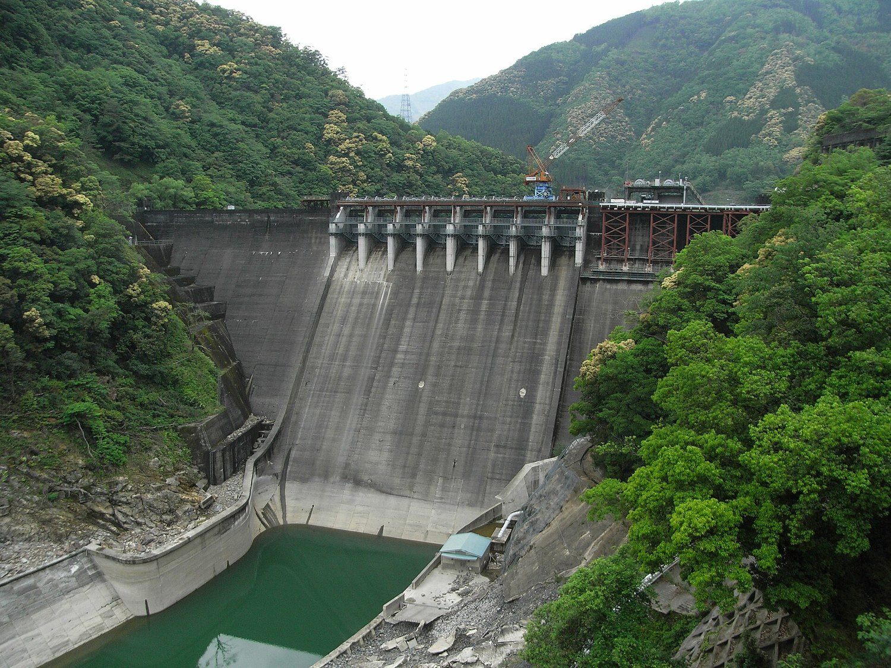
第5回
水の重さが三角形に分布して押す力と、堤体自身の重さ——その合力が底の内側を通るかぎり、この壁は倒れない。
河川一等兵／Public domain／Wikimedia Commons（塚原ダムの堤体、2008年撮影）
2026-10-20／講義資料「第5回」（教科書 3.2節 p.35〜、練習問題【3・2】p.44、補足資料：分布荷重）の範囲。第4回までは、荷重を「1点に働く力」として扱ってきた。しかし現実の重さは、物体のあらゆる部分に分布して働いている。この回は、その重さを釣合いの式に使える「1つの力」に置き換えるには、その力をどこに置けばよいか——その点が重心——を導き、実際に計算し、最後に分布荷重を受ける梁と台車の転倒に使うことが目標である。
.warn で注記した。計算はすべて Python（sympy・numpy・scipy）で検算してある（draft/check_05.py）。授業の共通の題材「小型移動マニピュレータ」の台車は、内部にバッテリー・モータ・制御基板などが入っている。講義資料は、同じ台車でバッテリーを後ろに置いたときと前に置いたときの全体の重心の位置（赤白の丸）が変わることを示している。
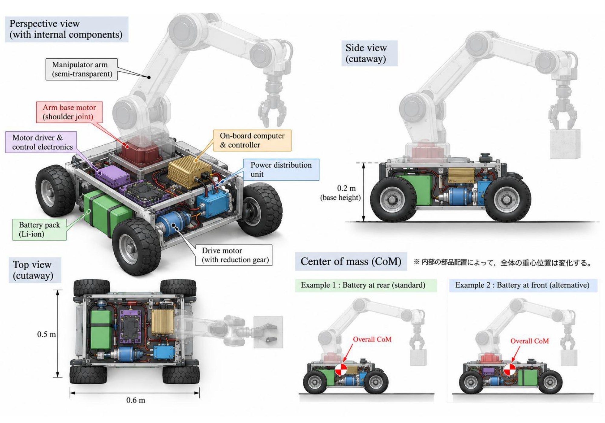
部品はそれぞれ違う場所にあり、違う重さを持つ。しかし、台車が坂で転ばないか、車輪が床から受ける力はいくらか、を考えるとき、私たちは台車全体の重さ $W$ を「1つの力」として、ある1点に作用させて考える。第4回の釣合いの式にそのまま入れるためである。その1点はどこか。これが今回の問いである。
講義資料が挙げた「今日のポイント」は次の3つ。
動機：定規の両端に重さの違う2つの消しゴムをのせて、指1本で水平に支えるとき、指をどこに当てればよいか。経験では、重い方に寄せる。この「寄せ方」を式にする。これが重心の出発点になる。
重さを無視できる長さ $l$ の棒の左端に質量 $m_1$、右端に質量 $m_2$ の質点がついている。棒の左端から距離 $l_G$ の点 G を、上向きの力 $F_G$ で支えて、棒が水平に釣合っているとする。
第4回の釣合い条件（合力 0・合モーメント 0）を、この棒に使う。外力は、2つの重力 $m_1g$、$m_2g$（下向き）と、点 G の支える力 $F_G$（上向き）。
STEP 1 力の釣合い（上向きを正）： $$F_G-m_1g-m_2g=0\qquad(1.1)$$← 鉛直方向の力の和が 0。
STEP 2 点 G まわりのモーメントの釣合い（反時計回りを正）。基準点を G にとる理由：未知の $F_G$ の腕が 0 になって、式から消えるから（第4回 1.4 節）。$m_1$ の重さは G の左 $l_G$ にあって下向きなので反時計回り（＋）、$m_2$ の重さは G の右 $l-l_G$ にあって下向きなので時計回り（−）： $$m_1g\,l_G-m_2g\,(l-l_G)=0\qquad(1.2)$$
STEP 3 (1.1) から $F_G=(m_1+m_2)g$。(1.2) の両辺を $g$ で割って展開する（$g$ が消えることに注意）：$m_1l_G-m_2l+m_2l_G=0$。$l_G$ を含む項を左に集める：$(m_1+m_2)\,l_G=m_2\,l$。よって $$l_G=\frac{m_2}{m_1+m_2}\,l\qquad(1.3)$$
(1.3) は、教科書の式 3.45 に当たる。数値例では $l_G=\dfrac{3}{2+3}\times1=0.6$ m、$F_G=5\times9.81=49.05$ N。距離の比は $l_G:(l-l_G)=0.6:0.4=3:2=m_2:m_1$ で、質量の比の逆になっている（重い方に近い）。講義資料の言い方では、「棒の長さを質点の質量比で案分した点」である。
ここで大事な観察が1つある。支える力は $F_G=(m_1+m_2)g$、つまり全体の重さに等しい。全体の重さをこの1点 G に集めて、同じ力で支えても同じ状態になる。つまり釣合いに関する限り、棒は、点 G に全質量が集まった1つの質点と同じとみなせる。これが次の定義である。
「等価」とは、第3回で学んだ意味である：力の集まりが物体に与える作用は、合力と合モーメントだけで決まる。したがって、各部分に働く重力の集まりを、全重力 $W$ を点 G に作用させた1つの力に置き換えて、合力も合モーメントも変わらないなら、置き換えは許される。その点 G が重心である。
1.1 の棒では、点 G で支えると釣合う（ $F_G=W$、点 G まわりのモーメント 0 ）。「重力のモーメントが釣合う点」と「全重量を1点に作用させて等価になる点」は、同じ点を別の見方で言ったものである。次の 1.3 で、$n$ 個の質点の場合に2つの見方のそれぞれから式を導き、同じ式が出ることを確かめる。
質点 $i$（$i=1,\dots,n$）の位置ベクトルを $\boldsymbol r_i=(x_i,\,y_i,\,z_i)$、質量を $m_i$ とする。質点に働く重力の大きさは $w_i=m_ig$。全重力は $$W=w_1+w_2+\cdots+w_n=\sum_{i=1}^{n}w_i\qquad(1.4)$$ である（物体全体に働く重力。向きがそろっているので、大きさをそのまま足してよい）。重力は $-z$ 向き（鉛直下向き）とし、$x$ 座標が重力のモーメントの腕になる場合を考える。
① 全重力 $W$ を、$x$ 座標が $x_G$ の点に作用させたとして、原点 O まわりのモーメントを比べる。
② 全重力を1点に作用させたとき：$W\,x_G$。 … (i)
③ 元の状態（各質点に別々に作用）：各質点の重力 $w_i$ の腕は $x_i$ なので、和は $w_1x_1+w_2x_2+\cdots+w_nx_n=\sum_i w_ix_i$。 … (ii)← 向きが同じ平行な力のモーメントは、単純に足してよい。
④ 等価なら (i)＝(ii)：$W\,x_G=\sum_i w_ix_i$。$W\neq0$ で割って $$x_G=\frac{1}{W}\sum_{i=1}^{n}w_ix_i\qquad(1.5)$$
① $x$ 軸上で、点 $x_G$ まわりの重力のモーメントの総和が 0 になる、と考える。← 「点 G で支えたら棒が傾かない」を式にしたもの（1.1 の STEP 2 の一般化）。
② 質点 $i$ は点 $x_G$ から $x_i-x_G$ だけ右にあり、重力は下向きなので、モーメントは時計回り（−）で $-w_i(x_i-x_G)$。総和を 0 とおく： $$-w_1(x_1-x_G)-w_2(x_2-x_G)-\cdots-w_n(x_n-x_G)=0$$
③ 和の記号で書き、括弧を展開する：$\sum_i w_i(x_i-x_G)=\sum_i w_ix_i-x_G\sum_i w_i$。← $x_G$ は $i$ によらない定数なので、和の外に出せる。
④ よって $x_G\sum_i w_i-\sum_i w_ix_i=0$。$\sum_i w_i=W$ を使って $x_G=\frac1W\sum_i w_ix_i$。これは (1.5) と同じ。
2つの見方から、同じ式が得られた。式 (1.5) は、$x_G$ が各質点の位置 $x_i$ の重みつき平均（重み＝その質点の重さ）であることを意味している。1.1 の式 (1.3) も、左端を原点にとれば $x_1=0$、$x_2=l$ なので、$x_G=\frac{m_2}{m_1+m_2}l$ となって一致する。
$y$ 座標も同様である（重力が $-z$ 向きのとき、$y$ 座標も重力のモーメントの腕になるので、同じ導出がそのまま使える）： $$y_G=\frac1W\sum_{i=1}^{n}w_iy_i,\qquad z_G=\frac1W\sum_{i=1}^{n}w_iz_i\qquad(1.6)$$ $z_G$ は、重力が $-z$ 向きのままでは腕にならないので、物体を回して（重力の向きを $x$ や $y$ の向きにして）同じ議論をして得られる。「回しても同じ点か」は 1.6 節で扱う。まず次の 1.4 節で、方向を決めずに一度に導く。
3つの式をまとめて、位置ベクトル $\boldsymbol r_G=(x_G,\,y_G,\,z_G)$ で書く： $$\boldsymbol r_G=\frac1W\sum_{i=1}^{n}w_i\,\boldsymbol r_i\qquad(1.7)$$ $w_i=m_ig$、$W=Mg$（$M=\sum m_i$ は全質量）を代入すると、$g$ が分子・分母で約分されて $$\boldsymbol r_G=\frac1M\sum_{i=1}^{n}m_i\,\boldsymbol r_i\qquad(1.7)'$$ となる（資料の「(3.50)′」）。これは重力が使われていない式で、質量中心（center of mass）と呼ばれる（物理学の呼び名）。重力が全質点で同じ $g$ とみなせる（一様な重力場）限り、重心と質量中心は同じ点である。
次に、(1.7) が「向きによらず、全重力を1点に置いて等価」になることを、ベクトルで一度に示す。第3回の外積（モーメント $\boldsymbol r\times\boldsymbol F$）を使う。
① 合力：$\sum\boldsymbol w_i=\bigl(\sum m_i\bigr)\boldsymbol g=M\boldsymbol g=\boldsymbol W$。確かに等しい。
② 原点 O まわりの合モーメント（元の状態）：$\sum_i\boldsymbol r_i\times(m_i\boldsymbol g)$。$\boldsymbol g$ は $i$ によらないので、外積の分配法則（第3回）で $\boldsymbol g$ を右にまとめる：$\Bigl(\sum_i m_i\boldsymbol r_i\Bigr)\times\boldsymbol g$。
③ 点 G に $\boldsymbol W$ を作用させたとき：$\boldsymbol r_G\times M\boldsymbol g=(M\boldsymbol r_G)\times\boldsymbol g$。
④ (1.7)′ から $M\boldsymbol r_G=\sum_i m_i\boldsymbol r_i$ なので、②＝③。$\boldsymbol g$ の向きには何も仮定していない。
質量 2 kg、3 kg、5 kg の3つの質点が、軽い板の上の座標 $(0,0)$、$(4,0)$、$(1,3)$（単位 m）に固定されている。重心の位置を求め、重心まわりの「質量×位置のずれ」の和が 0 になることを確かめよ。
解答
① 系：3つの質点。式 (1.7)′ を使う（$g$ は約分されるので質量のままでよい）。全質量 $M=2+3+5=10$ kg。
② 座標は問題のとおり。
③④ $x_G=\dfrac{2\times0+3\times4+5\times1}{10}$、$y_G=\dfrac{2\times0+3\times0+5\times3}{10}$。
⑤ $x_G=\dfrac{0+12+5}{10}=\mathbf{1.7}$ m、$y_G=\dfrac{0+0+15}{10}=\mathbf{1.5}$ m。
⑥ 確かめ：
・$x$ のずれ：$2(0-1.7)+3(4-1.7)+5(1-1.7)=-3.4+6.9-3.5=0$ ✓（(1.5) の導出②の「重心まわりの総和が 0」）。$y$ のずれも $2(-1.5)+3(-1.5)+5(1.5)=-7.5+7.5=0$ ✓。
・最も重い 5 kg の質点が重心に最も近い（距離 1.66 m。2 kg は 2.27 m、3 kg は 2.75 m）。重い質点ほど重心を引き寄せている。重心は、質点が作る図形の内側に入る（重みが正の平均なので、最小値と最大値の間に入る）。
答 重心 $(1.7,\ 1.5)$ m。
動機：物体を傾けたり、ひっくり返したりすると、重力の向き（物体から見た）が変わる。そのたびに重心は別の点に動くのか。動くなら、重心を1度計算しても役に立たない。結論：動かない（物体に固定された点）。講義資料の導出と、1.4 節の一行の導出の両方で示す。
① 質点系を、原点 O のまわりに角 $\theta$ だけ回す。質点 $i$ は $(x_i,\,z_i)\to(x'_i,\,z'_i)$ に移る。回転の式（第1回）は $$x'_i=\cos\theta\,x_i-\sin\theta\,z_i,\qquad z'_i=\sin\theta\,x_i+\cos\theta\,z_i\qquad(1.8)$$
② 回した姿勢でも重力は $-z$ 向き。重心の $x$ 座標 $x'_G$ は、(1.5) の導出と同じく、$x'_G$ まわりのモーメントの総和が 0 になる点：$-\sum_i w_i(x'_i-x'_G)=0$。
③ 整理して $x'_G\sum_i w_i=\sum_i w_ix'_i=\sum_i w_i(\cos\theta\,x_i-\sin\theta\,z_i)$。← (1.8) の $x'_i$ を代入。
④ $\sum_i w_i=W$ で割って、$\cos\theta$、$\sin\theta$ は $i$ によらないので和の外に出す： $$x'_G=\cos\theta\,\frac{\sum w_ix_i}{W}-\sin\theta\,\frac{\sum w_iz_i}{W}=\cos\theta\,x_G-\sin\theta\,z_G$$ 同様に $z'_G=\sin\theta\,x_G+\cos\theta\,z_G$。
⑤ これは (1.8) と同じ形、つまり重心も他の質点と同じ回転移動をする。物体のなかでの重心の相対的な位置は不変。重力の向きが変わっても、物体の重心位置は変わらない。
1.4 節の導出を使うと、もっと短い。ベクトル式 (1.7)′ は、物体に固定された位置 $\boldsymbol r_i$ の線形な組合せなので、全体を回転行列 $R$ で回しても $\dfrac1M\sum m_i(R\boldsymbol r_i)=R\Bigl(\dfrac1M\sum m_i\boldsymbol r_i\Bigr)=R\,\boldsymbol r_G$：重心は、他の質点と同じ回転を受ける。
PHOTO 1｜現実
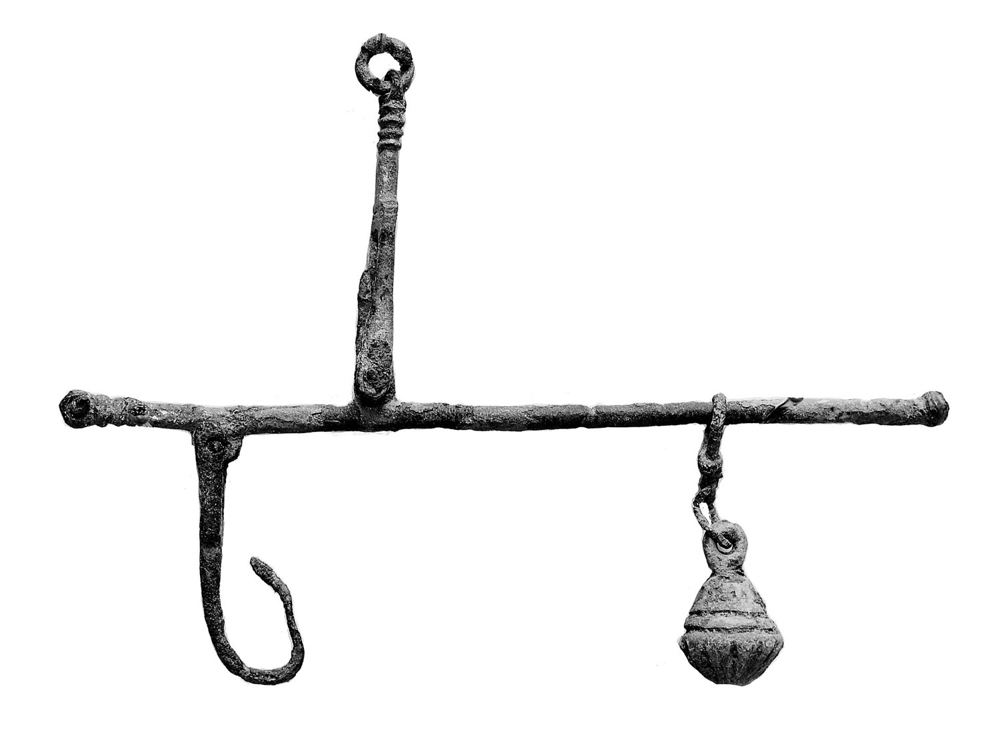
竿秤は、支点から物までの距離と、支点から分銅までの距離の比で重さを量る——1.1 節の案分そのものである。
不明（Wellcome Collection）／CC BY 4.0／Wikimedia Commons（古代ローマの竿秤と分銅）
現実の物体は、質点の集まりではなく連続している。連続体の重心を計算するために、「小さな部分の和」を積分で書き換える考え方と、この回で使う積分の計算を、先に確認しておく。
区間 $[0,a]$ を幅 $\Delta x$ の短冊に細かく分け、各短冊の中心の位置 $x_i$ で「$f(x_i)\times\Delta x$」を作って足す：$\sum_i f(x_i)\,\Delta x$。$\Delta x\to0$ の極限が定積分 $\int_0^a f(x)\,dx$ である（幅 $dx$ の微小な短冊を、$\int$（総和を表す記号）で足し合わせる）。例：$f(x)=x^2$ を4本の短冊で足すと、$x_i=\tfrac18,\tfrac38,\tfrac58,\tfrac78$、$\Delta x=\tfrac14$ なので $\tfrac14\bigl(\tfrac1{64}+\tfrac9{64}+\tfrac{25}{64}+\tfrac{49}{64}\bigr)=\tfrac{21}{64}=0.328$。極限の値は $\int_0^1x^2dx=\tfrac13=0.333$ に近い。
$$\int_0^a dx=a,\qquad\int_0^a x\,dx=\frac{a^2}{2},\qquad\int_0^a x^2\,dx=\frac{a^3}{3},\qquad\int_{-\alpha}^{\alpha}\cos\theta\,d\theta=2\sin\alpha\qquad(2.1)$$ 最初の3つは、$x^n$ の原始関数が $\dfrac{x^{n+1}}{n+1}$ であること（微分すると $x^n$ に戻る）から。$\int_0^a x\,dx=\dfrac{a^2}2$ は、図形として見ると、高さ $x$ の直線（傾き 1）の下の三角形の面積 $\tfrac12\cdot a\cdot a$ に等しい。最後は $\sin$ の微分が $\cos$ であることから $[\sin\theta]_{-\alpha}^{\alpha}=\sin\alpha-\sin(-\alpha)=2\sin\alpha$（$\sin$ は奇関数）。
平面の図形の上で、小さな面積 $ds$ を $dx\,dy$（横 $dx$、縦 $dy$ の長方形）で表し、$x$ と $y$ の両方で足し合わせるのが二重積分 $\iint\cdots dx\,dy$ である。積分の範囲が定数（長方形など）のときは、内側の積分を先にして（そのとき他の変数は定数とみなす）、外側の積分を後でする。例：$\displaystyle\int_0^b\!\!\int_0^a x\,dx\,dy=\int_0^b\Bigl[\frac{x^2}{2}\Bigr]_0^a dy=\int_0^b\frac{a^2}{2}dy=\frac{a^2}{2}\,b$。
中心 O から距離 $\rho$、$x$ 軸からの角 $\theta$ で点を表す方法が極座標で、$x=\rho\cos\theta$、$y=\rho\sin\theta$。角が $d\theta$、距離が $d\rho$ の小さな「扇形の小片」は、縦（半径方向）が $d\rho$、横（弧の長さ）が $\rho\,d\theta$ の長方形とみなせるので、面積は $$ds=\rho\,d\rho\,d\theta\qquad(2.2)$$ （$\rho$ が掛かる理由：同じ角 $d\theta$ でも、中心から遠いほど弧が長いから。）
$x$ 軸について上下対称な図形では、$y$ と $-y$ の位置に同じ重さの小部分が対になって並ぶので、$\int y\,dw$ の中で打ち消し合って 0 になる。奇関数の積分が 0（$\int_{-c}^{c}(\text{奇関数})=0$）になることと同じである。
動機：連続した物体の重心の式を、1章の式（質点の和）から導きたい。
① 物体を、$N$ 個の小さな部分に分ける。$i$ 番目の部分の重さを $\Delta w_i$、その位置（部分の中のどこか1点）を $\boldsymbol r_i$ とし、小部分を質点とみなすと、1章の式 (1.7) が使える： $$\boldsymbol r_G\approx\frac1W\sum_{i=1}^{N}\Delta w_i\,\boldsymbol r_i,\qquad W=\sum\Delta w_i$$
② 分割を細かくして $\Delta w_i\to0$ の極限をとる。和 $\sum$ が積分 $\int$、$\Delta w_i$ が微小な重さ $dw$ になる（2.1(a)）： $$\boldsymbol r_G=\frac1W\int\boldsymbol r\,dw,\qquad W=\int dw\qquad(2.3)$$ 成分で書くと $$x_G=\frac1W\int x\,dw,\qquad y_G=\frac1W\int y\,dw,\qquad z_G=\frac1W\int z\,dw\qquad(2.4)$$
講義資料は、1次元の場合として、区間 $[a,b]$ の位置 $x$ にある幅 $dx$ の小部分の重さを $dw$、$x_G$ まわりのモーメントの総和を 0 とおいて、$-\int_a^b(x-x_G)\,dw=0$、すなわち $x_G=\dfrac{\int_a^b x\,dw}{\int_a^b dw}$ を導いている。これは (2.4) の1次元版で、1.3 の考え方2をそのまま積分にしたものである。
密度 $\rho$ が物体のどこでも等しい（均質）ならば、小部分の重さは体積に比例する：$dw=\rho g\,dv$（$dv$ は微小な体積）。$\rho g$ は定数なので (2.3) の分子と分母で約分されて、重さが消える： $$\boldsymbol r_G=\frac{\int_V\boldsymbol r\,dv}{\int_V dv}=\frac1V\int_V\boldsymbol r\,dv\qquad(2.5)$$ 同様に、均質で厚さが一様な薄板では重さが面積 $S$ に比例し、均質な細い線では長さ $L$ に比例する： $$\boldsymbol r_G=\frac1S\int_S\boldsymbol r\,ds,\qquad\boldsymbol r_G=\frac1L\int\boldsymbol r\,dl\qquad(2.6)$$ これらは形だけで決まる点である。均質な物体の重心を図心（centroid）と呼ぶことがある（建築・デザインでの呼び名）。
動機：複雑な形を毎回積分で計算するのは大変である。長方形や三角形のように、すでに重心がわかっている部分に分けられれば、積分は不要になる。
① 物体を、位置 $x=c$ を境に2つの部分 1（$a\le x\le c$）と 2（$c\le x\le b$）に分ける。部分 1、2 の重さを $W_1=\int_a^c dw$、$W_2=\int_c^b dw$、重心の $x$ 座標を $x_{G1}=\dfrac{\int_a^c x\,dw}{W_1}$、$x_{G2}=\dfrac{\int_c^b x\,dw}{W_2}$ とする。$W_1+W_2=W$。
② 全体の重心の $x$ 座標の分子は、積分区間を足して $\int_a^b x\,dw=\int_a^c x\,dw+\int_c^b x\,dw$。← 積分は区間について足し算できる。
③ ①の式から $\int_a^c x\,dw=W_1x_{G1}$、$\int_c^b x\,dw=W_2x_{G2}$。よって $$x_G=\frac{W_1x_{G1}+W_2x_{G2}}{W_1+W_2}\qquad(2.7)$$
(2.7) は、各部分の全重量を、各部分の重心に集めた質点とみなして、1章の式 (1.5) を使うことを意味している。部分の中身は積分で計算する必要がない（同じ理由で $y_G$、$z_G$ も同様）。3つ以上の部分でも、$x_G=\dfrac{\sum_k W_kx_{Gk}}{\sum_k W_k}$。
均質な薄板なら、重さを面積に置き換えてよい（2.3）：$x_G=\dfrac{S_1x_{G1}+S_2x_{G2}}{S_1+S_2}$。穴や欠けた部分があるときは、欠けた部分を「負の面積（負の重さ）」で足す：全体の板（欠損を埋めた形）と、欠けた部分を考え、$x_G=\dfrac{S_{\text{大}}x_{G\text{大}}-S_{\text{欠}}x_{G\text{欠}}}{S_{\text{大}}-S_{\text{欠}}}$（3.4 節で使う）。
PHOTO 2｜現実
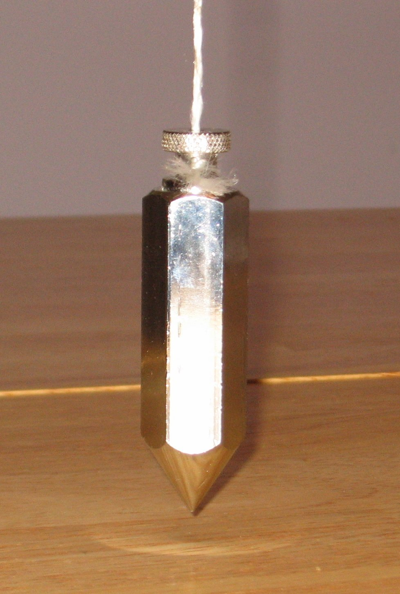
糸で吊るされた錘は、重心を糸の真下に置いたときにだけ静止する。
Jim Thomas／CC BY-SA 3.0／Wikimedia Commons（下げ振り）
2章の道具で、講義資料の4つの例（長方形・三角形・L字板・扇形）を計算する。各例とも、①座標軸と原点を決める、②小片の取り方（$dx$、$dy$、$\rho\,d\rho\,d\theta$ など）を決める、③小片の面積を書く、④面積と一次モーメントを積分する、⑤割って重心、⑥確かめるの順で進める。
横 $a$、縦 $b$ の均質な長方形の薄板。左下の角を原点 O にとり、辺に沿って $x$ 軸、$y$ 軸をとる。
① 面積 $S=ab$。小片は $dx\times dy$ の小さな長方形で、面積 $ds=dx\,dy$。位置は $(x,y)$。
② 均質な薄板なので (2.6) を使う：$x_G=\dfrac1S\displaystyle\int_S x\,ds=\dfrac{1}{ab}\int_0^b\!\!\int_0^a x\,dx\,dy$。
③ 内側の積分（$y$ は定数とみなす）：$\displaystyle\int_0^a x\,dx=\dfrac{a^2}{2}$。 外側：$\displaystyle\int_0^b\dfrac{a^2}{2}\,dy=\dfrac{a^2}{2}b$。
④ よって $x_G=\dfrac{a^2b/2}{ab}=\dfrac a2$。
⑤ $y$ 座標も、$x$ と $y$ を入れ替えて同様に（資料は「過程省略」）：$y_G=\dfrac{1}{ab}\displaystyle\int_0^a\!\!\int_0^b y\,dy\,dx=\dfrac{1}{ab}\cdot\dfrac{b^2}{2}\,a=\dfrac b2$。
$$x_G=\frac a2,\qquad y_G=\frac b2\qquad(3.1)$$ 確かめ：長方形の中心。対称性（2.5 の1）からも、左右対称なら $x_G=a/2$、上下対称なら $y_G=b/2$ とすぐわかる。積分を1つにする方法もある：縦長の帯（幅 $dx$）は面積 $ds=b\,dx$ なので、$x_G=\dfrac1{ab}\int_0^a x\,b\,dx=\dfrac{a^2b/2}{ab}=\dfrac a2$。
頂点を原点 O に置き、$x$ 軸について対称な二等辺三角形を考える。底辺は $x=a$ に立っていて、長さ $b$。三角形の上側の辺は $y=\dfrac b{2a}x$、下側は $y=-\dfrac{b}{2a}x$ で、位置 $x$ での縦の幅は $2\times\dfrac{b}{2a}x=\dfrac ba\,x$（講義資料の図の「$\dfrac ba x$」）。
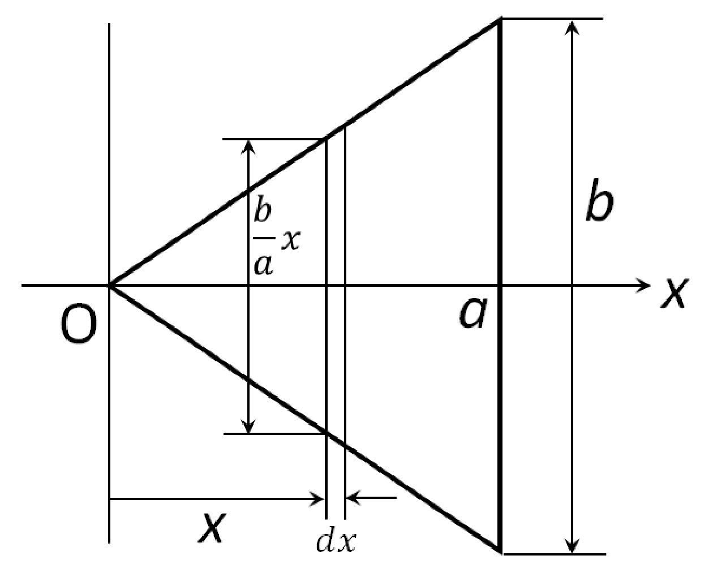
① 面積 $S=\dfrac12ab$。図のような細い短冊（幅 $dx$、高さ $\dfrac ba x$）を小片にとる：$ds=\dfrac ba\,x\,dx$。短冊の重心は短冊の中央（高さ方向は $y=0$、$x$ 座標は $x$）。← 短冊は十分に細いので、短冊全体の $x$ 座標を $x$ とみなしてよい。
② $y_G=0$：図形が $x$ 軸について対称なので（2.5 の1）。
③ $x_G=\dfrac{\int x\,ds}{\int ds}=\dfrac{\displaystyle\int_0^a x\cdot\dfrac ba\,x\,dx}{\displaystyle\int_0^a\dfrac ba\,x\,dx}$。
④ 分子：$\dfrac ba\displaystyle\int_0^a x^2dx=\dfrac ba\cdot\dfrac{a^3}{3}=\dfrac{a^2b}{3}$。分母：$\dfrac ba\displaystyle\int_0^a x\,dx=\dfrac ba\cdot\dfrac{a^2}2=\dfrac{ab}{2}$（三角形の面積に一致 ✓）。
⑤ $x_G=\dfrac{a^2b/3}{ab/2}=\dfrac23\,a$。
$$x_G=\frac23\,a,\qquad y_G=0\qquad(3.2)$$ 確かめ：重心は頂点から $2/3$、つまり底辺から $a/3$（高さの $1/3$）の位置。三角形の内側にある ✓。図2.1 の短冊の数値計算（0.656、0.666 → 0.667）とも一致する。
中心 O、半径 $r$、中心角 $2\alpha$（$x$ 軸の上下に $\alpha$ ずつ開く）の均質な扇形。$x$ 軸について対称なので $y_G=0$。$x_G$ を2通りで求める。
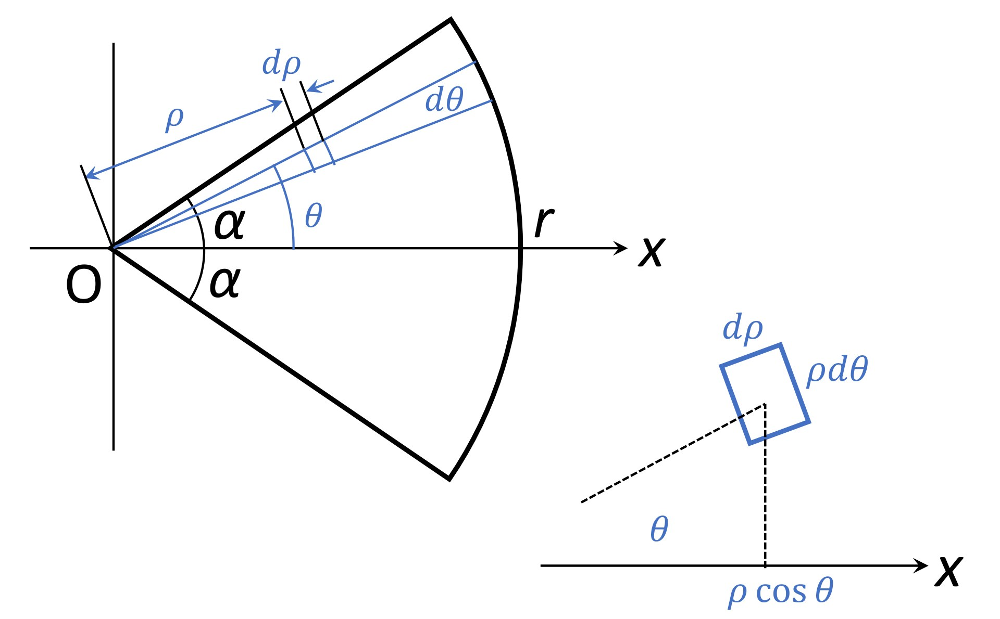
① 小片：中心から $\rho$、角 $\theta$ の位置の、$d\rho\times\rho\,d\theta$ の小さな長方形。面積 $ds=\rho\,d\rho\,d\theta$（式 2.2）。その $x$ 座標は $x=\rho\cos\theta$。← 図の右下の小片と、その真下の $\rho\cos\theta$ の寸法。
② 一次モーメント： $$\int x\,ds=\int_{-\alpha}^{\alpha}\!\!\int_0^r\rho\cos\theta\cdot\rho\,d\rho\,d\theta=\int_{-\alpha}^{\alpha}\cos\theta\,d\theta\cdot\int_0^r\rho^2\,d\rho=2\sin\alpha\cdot\frac{r^3}{3}=\frac23\,r^3\sin\alpha$$ ← 被積分関数が「$\theta$ だけの関数 × $\rho$ だけの関数」で、範囲が定数なので、積分は積に分かれる（2.1(b) の公式）。
③ 面積：$\displaystyle S=\int ds=\int_{-\alpha}^{\alpha}\!\!\int_0^r\rho\,d\rho\,d\theta=2\alpha\cdot\frac{r^2}{2}=r^2\alpha$。（中心角 $2\alpha$ の扇形の面積 $\tfrac12r^2\times2\alpha$ に一致 ✓。）
④ $x_G=\dfrac{\int x\,ds}{S}=\dfrac{\frac23r^3\sin\alpha}{r^2\alpha}=\dfrac{2r\sin\alpha}{3\alpha}$。
① 角 $d\theta$ の細い扇形の小片を、細い三角形とみなす（$d\theta\to0$ の極限で正確）。面積 $ds=\dfrac12\,r\,(r\,d\theta)=\dfrac12r^2\,d\theta$。
② 三角形の重心は、頂点（中心 O）から高さの $2/3$（3.2 節）。いまの細い三角形の「高さ」は半径方向の長さ $r$ なので、重心は中心から $\dfrac23r$ の位置、角 $\theta$ の方向。よって重心の $x$ 座標は $x=\dfrac23\,r\cos\theta$。
③ (2.6) に代入：$x_G=\dfrac{\int_{-\alpha}^{\alpha}\frac23r\cos\theta\cdot\frac12r^2d\theta}{\int_{-\alpha}^{\alpha}\frac12r^2d\theta}=\dfrac{\frac13r^3\cdot2\sin\alpha}{r^2\alpha}=\dfrac{2r\sin\alpha}{3\alpha}$。方法1と一致する。
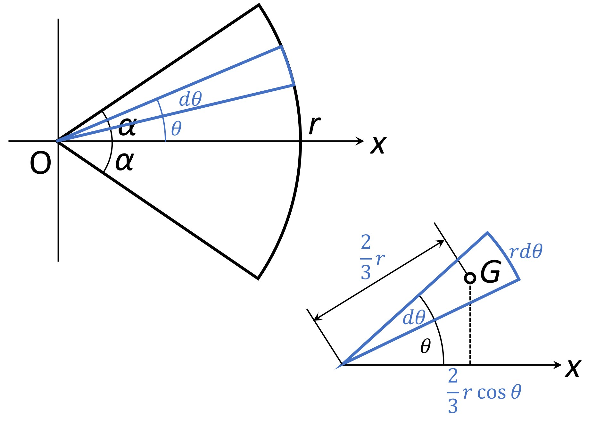
$$x_G=\frac{2r\sin\alpha}{3\alpha}\qquad(\alpha\ \text{はラジアン}),\qquad y_G=0\qquad(3.3)$$
確かめ（2.5 の4つの検算）：
・$\alpha\to0$（細い扇形）：$\sin\alpha\approx\alpha$ なので $x_G\to\dfrac23r$。細い三角形（頂点から $2/3$、3.2 節）に一致 ✓。
・$\alpha=\dfrac\pi2$（半円）：$x_G=\dfrac{2r}{3\cdot\pi/2}=\dfrac{4r}{3\pi}\approx0.4244\,r$。半円の重心の公式として知られる値に一致 ✓。
・$\alpha=\pi$（円）：$\sin\pi=0$ なので $x_G=0$。円の重心は中心 ✓。
・数値例：$r=0.5$ m、$\alpha=60°=\dfrac\pi3$：$x_G=\dfrac{2\times0.5\times\sin60°}{3\times\pi/3}=\dfrac{0.8660}{\pi}=\mathbf{0.2757}$ m（Python の数値積分でも 0.2757）。
図のL字形の板（一様、厚さ一様）の重心を求めよ。積分は不要で、分割（2.4）で解ける。
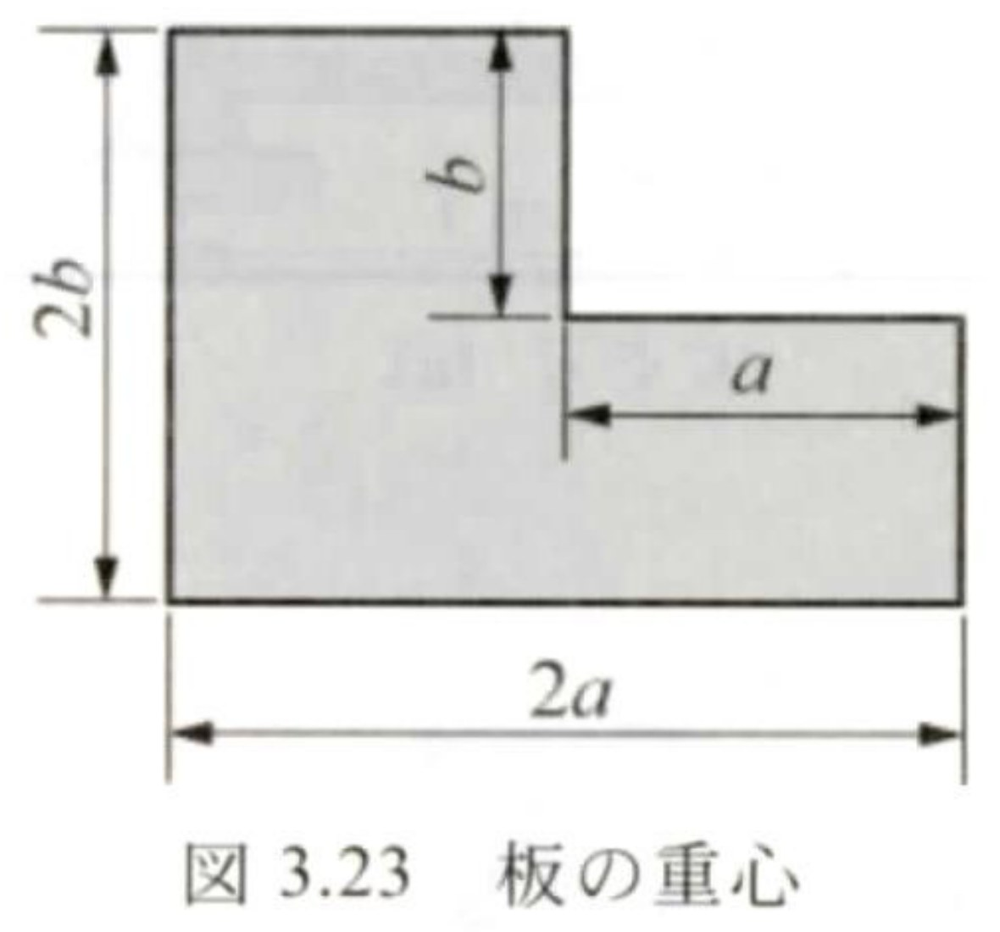
解答（分割法）
① 系：L字板。左下の角を原点にとる。左の縦長の長方形 1（幅 $a$、高さ $2b$）と右下の横長の長方形 2（幅 $a$、高さ $b$）に分ける。
② 座標：$x$ を右、$y$ を上。
③ 各部分（2.3：均質なので重さは面積に比例）：
・部分 1：面積 $S_1=2ab$、重心 $G_1=\Bigl(\dfrac a2,\ b\Bigr)$（長方形の中心、(3.1)）。
・部分 2：面積 $S_2=ab$、重心 $G_2=\Bigl(\dfrac{3a}{2},\ \dfrac b2\Bigr)$（左の辺が $x=a$ で幅 $a$ なので、中心は $a+\tfrac a2$）。
・全体：$S=S_1+S_2=3ab$。
④⑤ (2.7) を $x$、$y$ について： $$x_G=\frac{\frac a2\cdot2ab+\frac{3a}{2}\cdot ab}{3ab}=\frac{a^2b+\frac32a^2b}{3ab}=\frac{\frac52a^2b}{3ab}=\frac56\,a,\qquad y_G=\frac{b\cdot2ab+\frac b2\cdot ab}{3ab}=\frac{2ab^2+\frac12ab^2}{3ab}=\frac56\,b$$
⑥ 確かめ：重心 $\bigl(\tfrac56a,\tfrac56b\bigr)$ は、左の縦長部分（$0\le x\le a$、$0\le y\le2b$）の内側にある ✓（板の中に入る）。大きな部分（面積 $2ab$）のほうに寄っていて、左下の方向にずれている ✓。
別解（欠損を引く）：横 $2a$、縦 $2b$ の長方形（面積 $4ab$、重心 $(a,b)$）から、右上の欠けた長方形（面積 $ab$、重心 $\bigl(\tfrac{3a}2,\tfrac{3b}2\bigr)$）を引く：
$$x_G=\frac{a\cdot4ab-\frac{3a}2\cdot ab}{4ab-ab}=\frac{4a^2b-\frac32a^2b}{3ab}=\frac{\frac52a^2b}{3ab}=\frac56a$$
$y_G$ も同様に $\dfrac56b$。分割法と一致する ✓。
数値例：$a=0.30$ m、$b=0.20$ m なら $(x_G,\,y_G)=(0.25\ \text{m},\ 0.167\ \text{m})$。
答 $x_G=\dfrac56a$、$y_G=\dfrac56b$（板の左下の角から）。
PHOTO 3｜現実
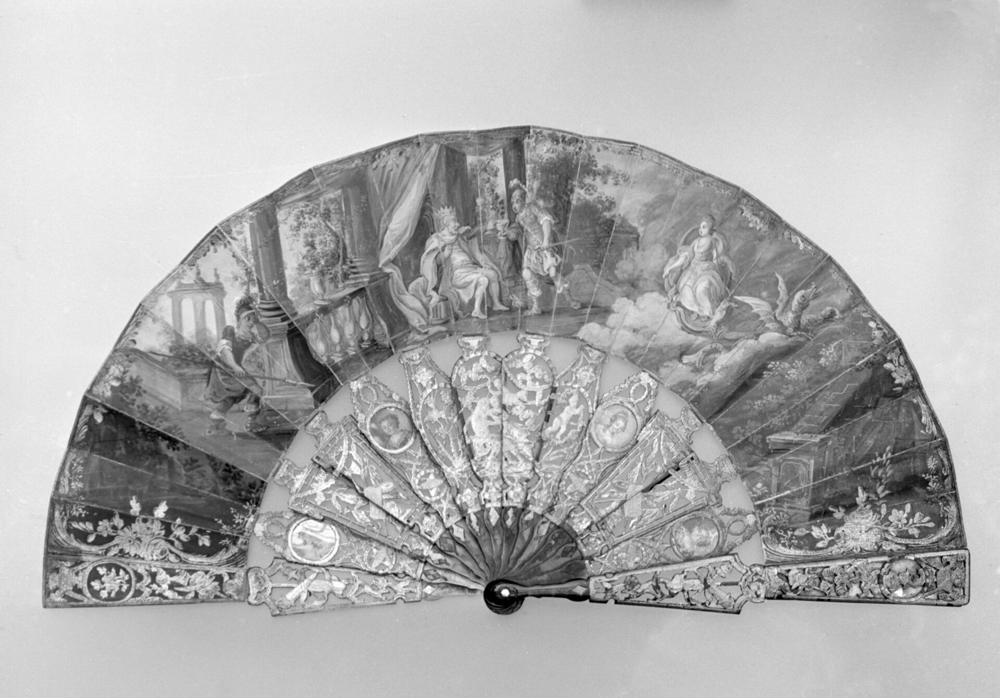
扇を開くと、要から扇面の重さの中心までの距離は、開き角で決まる——式 (3.3) の扇形である。
不明（メトロポリタン美術館）／CC0／Wikimedia Commons（18世紀後半の折り扇）
MITATE 3｜見立て
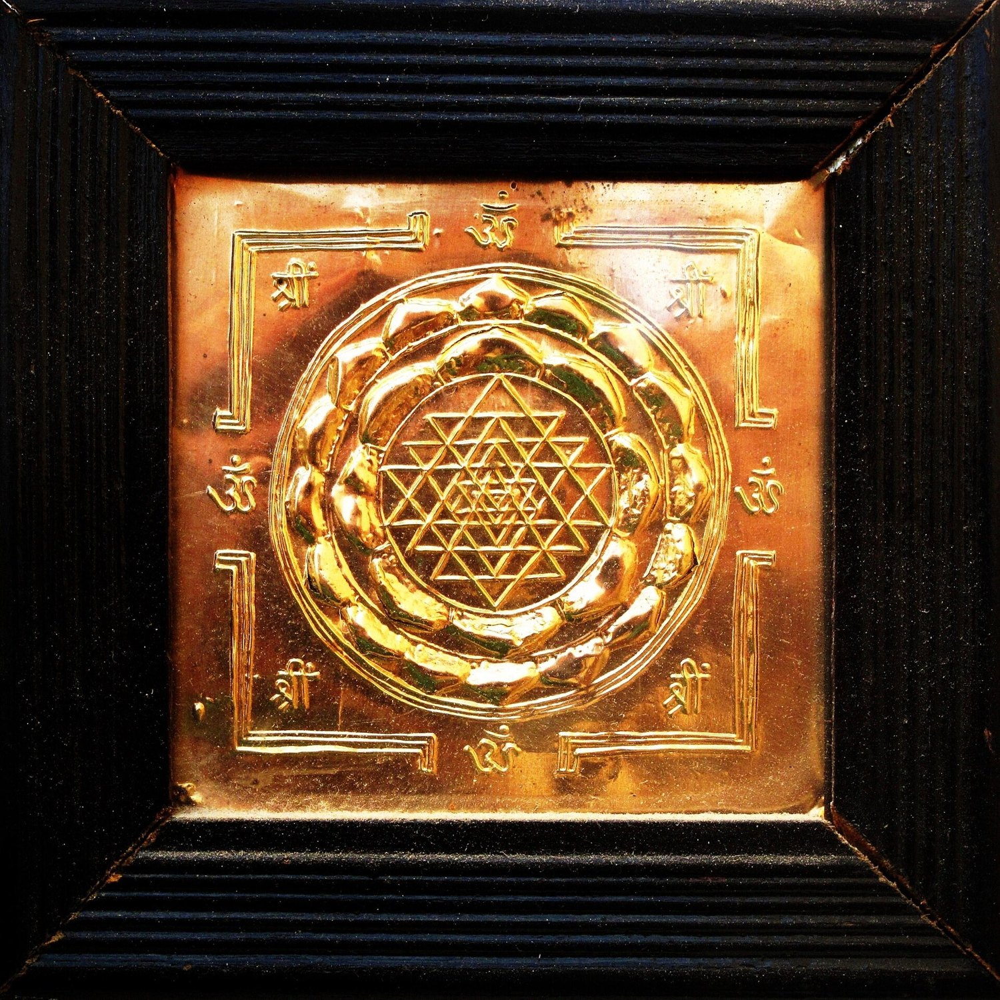
重なり合う三角形が一点に向かって収まる図を、人は祈りの形にした。
Tangopaso／Public domain／Wikimedia Commons（銅板のシュリー・ヤントラ）
動機：重心は「重さをまとめて置く点」というだけでなく、「物体が倒れるかどうか」の判定にも使われる。机の上の物体は、重さと床からの反力の2つで釣合っているが、傾けると、2つの力がずれて、モーメントが生まれる。重心の位置が、そのモーメントの向きを決める。
水平な床に置いた円すいを考える。講義資料は、3つの置き方を比べている。
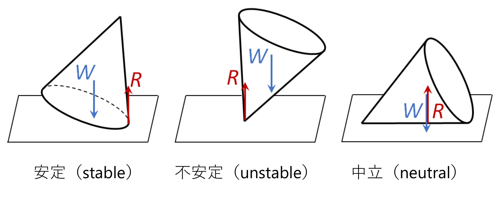
講義資料は「釣合いの安定度は、姿勢が変化したときの重心の［ ］で決まる」と書いている。［推定］重心の「高さ」の変化である（答えはスライドの画像の中で読み取れなかったので、以下の説明から本教材が推定した）。
床の上の直方体を、底面の端（角）を支点にして少しずつ傾ける。重さ $W$ は重心 G に、床の反力 $R$ は接している角に、それぞれ鉛直に働く。
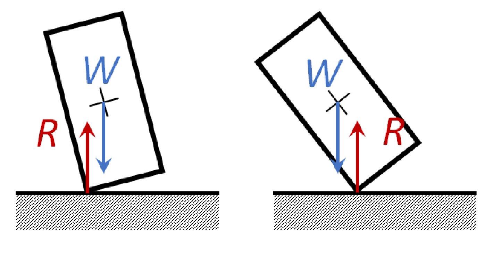
講義資料の空欄は「重心の［ ］が［ ］とモーメントが反転→転倒」。［推定］重心を通る鉛直線（重力の作用線）が、支持面（底面）の外に出ると、モーメントが反転して転倒する。次の計算で確かめる。
① 系：一様な直方体（幅 $b$、高さ $h$、重さ $W$）。右下の角 P を支点にして、左側を持ち上げるように角度 $\theta$ だけ傾ける（右下が倒れていく向き）。外力は重さ $W$（重心 G、下向き）と、角 P で床から受ける反力 $R$（上向き）。
② 座標：P を原点、$x$ を右（倒れる向き）、$y$ を上。力の釣合い（鉛直）：$R=W$。
③ P まわりのモーメント：$R$ は P を通るので腕 0。$W$ の腕は G の $x$ 座標。傾ける前の G の位置は、P から見て $\bigl(-\tfrac b2,\ \tfrac h2\bigr)$。角 $\theta$ だけ時計回りに回す（右が下がる向き）と、G の $x$ 座標は $$x_G(\theta)=-\frac b2\cos\theta+\frac h2\sin\theta\qquad(4.1)$$ ← 回転の式（1.8）で角度の向きを時計回りにしたもの。$\theta=0$ では $-b/2$（P の左）。
④ $W$（下向き）が P のまわりに作るモーメントは、反時計回りを正として $M_P=x_G(\theta)\times(-W)=-W\,x_G(\theta)=W\Bigl(\dfrac b2\cos\theta-\dfrac h2\sin\theta\Bigr)$。$M_P>0$（反時計回り）なら元に戻す向き、$M_P<0$ なら倒す向き。
⑤ 境目は $M_P=0$、すなわち G が P の真上に来る（G の鉛直線が角 P を通る）： $$\tan\theta_c=\frac bh\qquad(4.2)$$ $\theta<\theta_c$ では G の鉛直線が底面の内側（P の左）にあって元に戻り、$\theta>\theta_c$ では外側（P の右）に出て倒れる。
数値例：$b=0.4$ m、$h=0.9$ m なら $\theta_c=\arctan\dfrac{0.4}{0.9}=\mathbf{24.0°}$。背が高く幅の狭い物体（$h$ が大きく $b$ が小さい）ほど $\theta_c$ が小さく、倒れやすい。
(4.1) から、傾けたときの重心の高さは $$z_G(\theta)=\frac h2\cos\theta+\frac b2\sin\theta\qquad(4.3)$$ （傾ける前は $h/2$。傾けると、右側の角 P を支点にして重心が円を描く。）これを $\theta$ で微分すると $\dfrac{dz_G}{d\theta}=-\dfrac h2\sin\theta+\dfrac b2\cos\theta$。右辺は (4.1) の $-x_G(\theta)$ に等しい：$\dfrac{dz_G}{d\theta}=-x_G(\theta)$。したがって、元に戻すモーメント $M_P=W\,\dfrac{dz_G}{d\theta}$ である。
底面が接する支持面（複数の足の場合は、足の接地点を結んだ多角形）の上で、床は物体を押すことしかできない（引けない）。床が各接地点で上向きの力 $R_k\ge0$ を出すとき、その合力は $$R=\sum_k R_k,\qquad\text{作用点}\ \ \boldsymbol r_R=\frac{\sum_kR_k\,\boldsymbol r_k}{\sum_kR_k}$$ で、(1.5) と同じ形の重みつき平均（重み $R_k\ge0$）である。重みが負にならないので、作用点は接地点を結んだ多角形の内側にしか来ない。一方、静止しているなら、物体に働く力は重さ $W$ と合力 $R$ の2つで、第4回で見たとおり、2力の釣合いは（二力部材のときと同じ理由で）同一作用線上に並ぶ。よって、$W$ の作用線（重心 G を通る鉛直線）が支持面の内側に入っているときだけ、釣合える。外に出ると、反力でモーメントを打ち消せず、物体は倒れる。
講義資料は、同じ考え方がロボットの歩行の安定性の議論に使われると紹介している。片足立ちのロボットでは、支持面は足の裏だけである。重心の真下付近に、床からの反力 $R$ の作用点が来る必要がある。
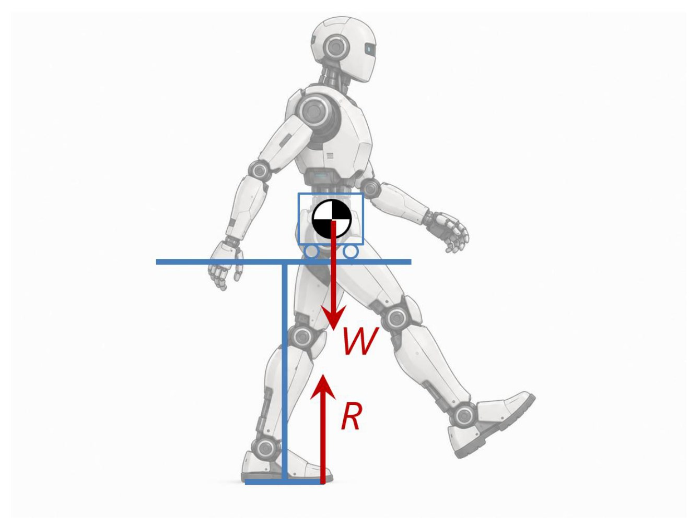
図は、ロボットの全質量が重心に集まったものを「カート」、足から重心までの支えを「テーブル」として、台の上でカートを動かす様子で歩行を模式化している（「テーブル–カートモデル」）。このモデルの詳しい式は、講義資料にここまでしか載っていない。この回の範囲では、床を押す力 $R$ の作用点が足の裏の内側に収まっているか、が歩行の安定の条件として使われる、という点（4.2 の定理）だけを押さえておけばよい。
PHOTO 4｜現実
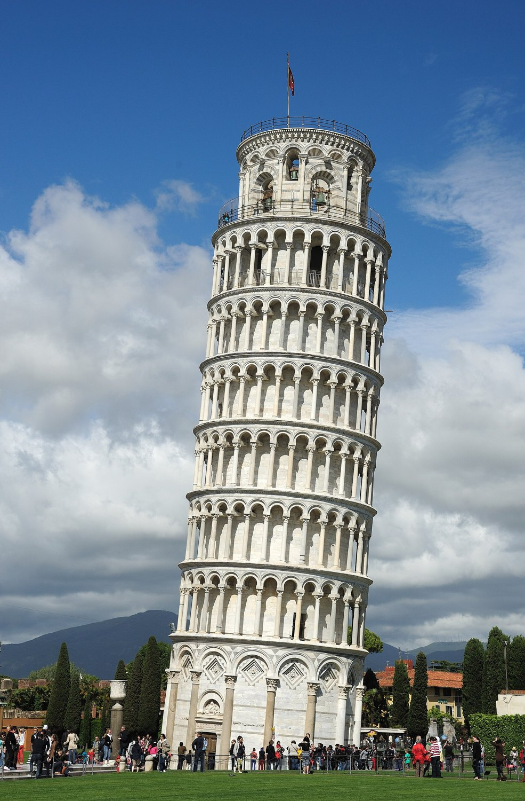
重心の低い人形は傾けるほど元に戻り、傾いた塔は重心の鉛直線が底の内側にあるあいだ立ち続ける。
Daderot／CC0／Wikimedia Commons（起き上がり小法師、石川県立伝統産業工芸館）
Saffron Blaze／CC BY-SA 3.0／Wikimedia Commons（ピサの斜塔）
動機：第4回までの荷重は、「1点に働く力」（集中荷重）だった。ところが、梁の上に積もった雪、堤防にかかる水の圧力、床板に載せた砂は、梁の長さに沿って連続的に分布した力である（分布荷重）。釣合いの式（第4回）に入れるには、分布荷重を1つの集中荷重（合力）に置き換えたい。置き換えた力の大きさと作用点は、どう決めるか。講義資料はこれを「補足資料」として扱っているが、重心の式とまったく同じ形で、ここまでの内容の直接の応用である。
$x$ 軸に沿った梁の区間 A〜B に、単位長さあたりの力（荷重分布）$w(x)$ [N/m] が下向きに働いている。
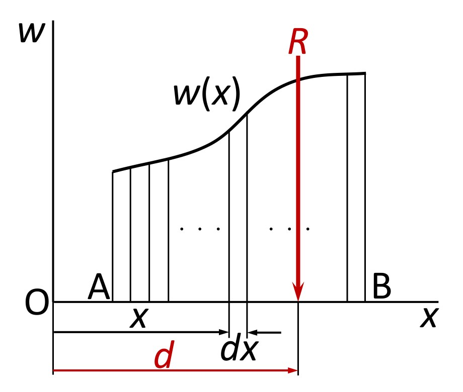
求めたいもの：分布荷重と等価になる合力 $R$ と作用点 $d$（原点 O から測る）。「等価」とは、合力も、原点まわりの合モーメントも等しいこと（第3回、1.2 節）。
STEP 1 位置 $x$ にある、幅 $dx$ の部分に働く力は $dw=w(x)\,dx$（単位長さあたりの力 × 長さ）。この部分は十分に短いので、1つの力 $dw$ とみなせる。
STEP 2 合力の大きさ：平行な力の合力は、大きさの和なので、区間 A〜B で足して $$R=\int dw=\int_A^B w(x)\,dx\qquad(5.1)$$
STEP 3 原点 O まわりのモーメント：$dw$ の腕は $x$ なので $dM=x\,dw$。全体で $$M=\int dM=\int_A^B x\,w(x)\,dx\qquad(5.2)$$
STEP 4 等価の条件：合力 $R$ を原点から $d$ の位置に置いたときの原点まわりのモーメント $R\,d$ が、分布荷重のモーメント $M$ に等しい：$M=Rd$。← 合力が元の合力に等しい（STEP 2）ことと合わせて、「合力・合モーメントがともに等しい」＝等価。
STEP 5 $d=\dfrac MR$ を (5.1)・(5.2) で書いて $$d=\frac{\displaystyle\int_A^B x\,w(x)\,dx}{\displaystyle\int_A^B w(x)\,dx}\qquad(5.3)$$
(5.3) は、重心の式 (2.4) $x_G=\dfrac{\int x\,dw}{\int dw}$ にそのまま一致している。「重さの分布」の代わりに「荷重の分布 $w(x)$」を使っているだけである。講義資料の結論：
荷重分布の図形を、長方形・三角形に分けて、面積と図心を使う（2.4 節の分割）。区間の長さを $L$、区間の左端を原点にとる。
| 荷重分布 | 合力 $R$（面積） | 作用点（左端から） | 根拠 |
|---|---|---|---|
| 等分布（一定の $w_0$） | $w_0L$ | $L/2$（中央） | 長方形：3.1 |
| 三角形分布（左端 0 から右端 $w_0$ へ増加） | $\tfrac12w_0L$ | $\tfrac23L$（0 の端から） | 三角形：3.2（頂点から $2/3$） |
| 三角形分布（左端 $w_0$ から右端 0 へ減少） | $\tfrac12w_0L$ | $\tfrac13L$（左端から） | 同上（0 の端から $2L/3$ ＝ 左端から $L/3$） |
| 台形分布 | 長方形＋三角形の和 | 2.4（2.7）で合成 | 下の例題3 |
(a) 長さ 5 m の梁 AB の左端 A はピン、右端 B はローラーで支えられている。A から 3 m の区間に、A で 0、そこから直線的に増えて 3 m の位置で 400 N/m になる三角形分布の荷重が下向きに働く（図5.1 左）。反力 $R_A$、$R_B$ を求めよ。
(b) 荷重が 200 N/m から 500 N/m まで直線的に増える台形分布（区間 3 m）の合力と作用点（200 N/m の端から）を求めよ。
解答
(a) ① 系：梁 AB。荷重は、下の ③ の合力に置き換える。未知数は $R_A$（鉛直成分。水平成分は 0）、$R_B$ の2つ。
② 座標：A を原点、$x$ を右、$y$ を上。反時計回りを正。
③ 合力：$R=\tfrac12\times400\times3=600$ N（下向き）。作用点は A から $d=\tfrac23\times3=2$ m（表の「0 の端から $2L/3$」）。
④ A まわり（$R_A$ が消える）：$R_B\times5-600\times2=0$。力の釣合い（鉛直）：$R_A+R_B-600=0$。
⑤ $R_B=\dfrac{1200}{5}=\mathbf{240}$ N、$R_A=600-240=\mathbf{360}$ N。
⑥ 確かめ：B まわり：$R_A\times5-600\times(5-2)=1800-1800=0$ ✓。
答 $R_A=360$ N、$R_B=240$ N。
(b) 分布を長方形（200 N/m、3 m）と三角形（200 N/m の上に 300 N/m が増える、3 m）に分ける。
・長方形：$R_1=200\times3=600$ N、作用点は端から $1.5$ m。
・三角形：$R_2=\tfrac12\times300\times3=450$ N、作用点は 0 の端（200 N/m 側）から $\tfrac23\times3=2$ m。
・合力：$R=600+450=\mathbf{1050}$ N。作用点（(2.7) の合成）：$d=\dfrac{600\times1.5+450\times2}{1050}=\dfrac{1800}{1050}=\mathbf{1.714}$ m。
確かめ：台形の面積 $\tfrac12(200+500)\times3=1050$ ✓。作用点は区間の中央 1.5 m より、荷重の大きい側（右）に寄っている ✓。
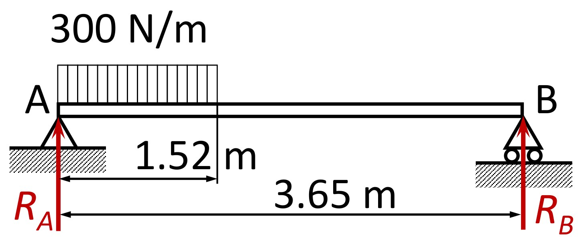
図のように、両端が単純支持された梁（左端 A はピン、右端 B はローラー）に分布荷重が作用するとき、支点反力を求めよ。（A から 1.52 m の区間に 300 N/m の等分布荷重。A、B 間は 3.65 m。梁の重さは無視。）
解答（講義資料 p.32〜33 に従い、手順①〜⑥を添えた）
① 系：梁 AB。分布荷重を集中荷重（合力）$R$ に置き換える。未知数 $R_A$、$R_B$（鉛直。ローラーなので B は鉛直のみ。A の水平成分は荷重が鉛直だけなので 0）の2つ。
② 座標：A を原点、右を $x$、上を $y$。力は上向きを正、モーメントは反時計回りを正（資料と同じ）。
③ 単位長さあたりの荷重が一定なので、全荷重は $$R=1.52\times300=456\ \text{N}\qquad(1)$$ 点 A から $R$ の作用点までの距離 $d$ は、分布荷重の重心までの距離に相当する。等分布なので区間の中央： $$d=\frac{1.52}{2}=0.76\ \text{m}\qquad(2)$$
④ 力の釣合いと、点 A まわりのモーメントの釣合い： $$R_A+R_B-456=0\qquad(3)$$ $$3.65\,R_B-0.76\times456=0\qquad(4)$$ ← A まわりにすると $R_A$ の腕が 0 で、(4) は未知数が $R_B$ だけになる。
⑤ (4) から $R_B=\dfrac{0.76\times456}{3.65}=\dfrac{346.56}{3.65}=94.95\to\mathbf{94.9}$ N。(3) から $R_A=456-94.95=361.05\to\mathbf{361.1}$ N。
⑥ 確かめ（使わなかった式で）：B まわり：$R_A\times3.65-456\times(3.65-0.76)=361.05\times3.65-456\times2.89=1317.9-1317.8\approx0$ ✓（丸めの範囲）。単位は N。$R_A>R_B$ は、荷重が A に近いから ✓。
答 $R_A=361.1$ N、$R_B=94.9$ N。
PHOTO 5｜現実
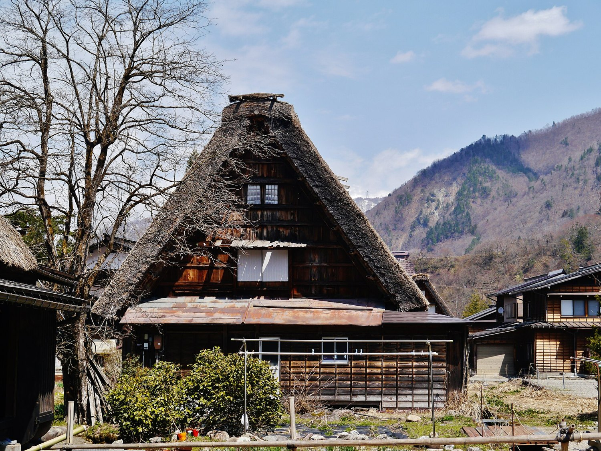
屋根に積もる雪は面に分布した重さで、合掌造りの急な屋根は、それを小さくするための形だという。
Zairon／CC BY-SA 4.0／Wikimedia Commons（白川郷の合掌造り）
MITATE 5｜見立て
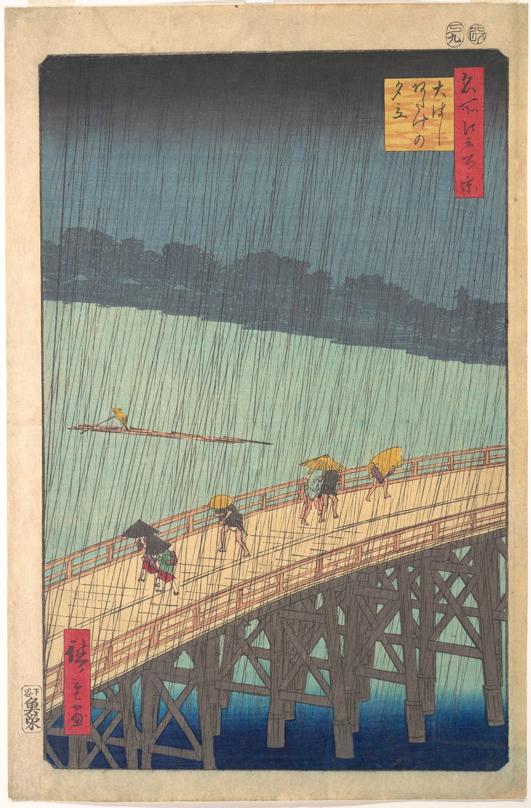
一本ずつの雨の筋は小さいが、橋に降りそそぐ総量は、ひとつの合力として橋にかかる。
歌川広重／CC0／Wikimedia Commons（『名所江戸百景 大はしあたけの夕立』1857年、メトロポリタン美術館所蔵）
1〜5章の道具を使って、この回の冒頭の問い（バッテリーを前に置くか後ろに置くか）に答える。講義資料の台車の寸法（長さ 0.6 m、高さ 0.2 m）を借りて、部品の質量と位置を本教材で仮定した（自作の数値例。実際の機体の数値ではない）。
前後の車輪の接地点の間隔が 0.6 m の台車を横から見る。後輪の接地点を原点 O に、前方（右）を $x$、上を $z$ とする。台車は次の4つの部分でできていて、それぞれの重心の位置は表のとおりとする。$g=9.81\ \mathrm{m/s^2}$。
| 部分 | 質量 $m$ [kg] | $x$ [m] | $z$ [m] |
|---|---|---|---|
| 車体（フレーム・モータ・基板） | 24 | 0.30 | 0.10 |
| バッテリー（後ろに置く／前に置く） | 10 | 0.10／0.50 | 0.10 |
| アーム | 6 | 0.60 | 0.45 |
| つかんだ荷物 | 4 | 0.90 | 0.45 |
(a) バッテリーを後ろに置いたときの、全体の重心 G の位置 $(x_G,\,z_G)$。(b) そのとき、後輪・前輪が床から受ける力（荷重）。(c) バッテリーを前に置くと、(a)(b) はどう変わるか。(d) バッテリーを後ろに置いた状態で、荷物の質量を増やしていくと、何 kg を超えると前に倒れる（後輪が浮く）か。(e) 荷物 4 kg を持ったまま、前を下にして傾斜 $\varphi$ の坂を下ると、何度で前に倒れるか（滑らないとして）。
解答
(a) ① 系：4つの質点（部分）の集まり。式 (1.7)′ を使う。全質量 $M=24+10+6+4=44$ kg、全重量 $W=44\times9.81=431.6$ N。
② 座標は問題のとおり。
③④⑤ $x_G=\dfrac{24\times0.30+10\times0.10+6\times0.60+4\times0.90}{44}=\dfrac{7.2+1.0+3.6+3.6}{44}=\dfrac{15.4}{44}=\mathbf{0.350}$ m。
$z_G=\dfrac{24\times0.10+10\times0.10+6\times0.45+4\times0.45}{44}=\dfrac{2.4+1.0+2.7+1.8}{44}=\dfrac{7.9}{44}=\mathbf{0.180}$ m。
⑥ 確かめ：$x_G=0.350$ は後輪（0）と前輪（0.6）の間にある ✓。$z_G$ は、重いもの（車体 $z=0.10$）に引かれて低い側にある ✓。
(b) ① 系：台車全体。全重量 $W$ を重心 G に集めた1つの力に置き換える（1.2 節の「等価」）。外力は、重さ $W$（G、下向き）、後輪の荷重 $N_r$、前輪の荷重 $N_f$（ともに上向き）。未知数 2。
② 座標：後輪の接地点 O を原点。
③④ 後輪 O まわりのモーメント（$N_r$ が消える）：$N_f\times0.6-W\times x_G=0$。力の釣合い（鉛直）：$N_r+N_f-W=0$。
⑤ $N_f=\dfrac{W\,x_G}{0.6}=\dfrac{431.6\times0.350}{0.6}=\mathbf{251.8}$ N、$N_r=431.6-251.8=\mathbf{179.9}$ N。
⑥ 確かめ：前輪まわり：$N_r\times0.6-W\times(0.6-0.350)=107.9-107.9=0$ ✓。
(c) バッテリーを前（$x=0.50$）にすると、$x_G$ の分子が $7.2+5.0+3.6+3.6=19.4$ となり、$x_G=\dfrac{19.4}{44}=\mathbf{0.441}$ m（$z_G$ は同じ 0.180 m）。$N_f=\dfrac{431.6\times0.441}{0.6}=\mathbf{317.2}$ N、$N_r=114.5$ N。重心が前に動いたので、前輪の荷重が増え、後輪の荷重が減った（図6.1）。
(d) 荷物の質量を $m$ とする。倒れる限界は、後輪が床から離れる瞬間、すなわち後輪の荷重 $N_r=0$。そのとき床の力は前輪の接地点（$x=0.6$）だけで、前輪の接地点まわりのモーメントが 0：各部分の重さが前輪まわりに作るモーメントの和 $=0$（反時計回りを正、重さは下向き）： 前輪の左側にある部分（車体、バッテリー）は、重さが後ろへ戻す向きのモーメント $m_ig\,(0.6-x_i)$ を作り、右側にある荷物は前へ倒す向きのモーメント $m\,g\,(0.90-0.6)$ を作る。限界で2つが等しい： $$24\,(0.60-0.30)+10\,(0.60-0.10)+6\,(0.60-0.60)=m\,(0.90-0.60)\quad\Longrightarrow\quad7.2+5.0+0=0.30\,m$$ $$m=\frac{12.2}{0.30}=\mathbf{40.7}\ \text{kg}$$ （$g$ は両辺で約分された。）確かめ：このとき全体の重心の $x$ 座標は $\dfrac{7.2+1.0+3.6+40.7\times0.9}{24+10+6+40.7}=\dfrac{48.4}{80.7}=0.600$ m（前輪の真上）になる ✓。バッテリーを前に置くと（$10\times(0.6-0.5)=1.0$ に変わり）$m=\dfrac{7.2+1.0}{0.30}=\mathbf{27.3}$ kg。バッテリーを後ろに置くと、前に倒れにくい（後ろのバッテリーがカウンターウェイトになる）。
(e) 坂の傾斜 $\varphi$（前が下）。台車の底面に沿って $x$、垂直に $z$ をとり直す（重心の座標はそのまま）。重力は、底面に沿って前向きに $W\sin\varphi$、底面に垂直に下向きに $W\cos\varphi$。前輪の接地点（$x=0.6,\ z=0$）まわりの重さのモーメント（反時計回りを正）：
$$M=W\bigl[(0.6-x_G)\cos\varphi-z_G\sin\varphi\bigr]$$
（$\cos\varphi$ の項は、重心が前輪より後ろにあるので元に戻す向き、$\sin\varphi$ の項は、重心が高いので前に倒す向き。）倒れる限界は $M=0$：
$$\tan\varphi_c=\frac{0.6-x_G}{z_G}=\frac{0.600-0.350}{0.180}=1.39\quad\Longrightarrow\quad\varphi_c=\mathbf{54°}$$
バッテリーが前なら $\tan\varphi_c=\dfrac{0.600-0.441}{0.180}=0.886$、$\varphi_c=\mathbf{41.5°}$。
答 (a) $G=(0.350,\ 0.180)$ m。(b) 後輪 179.9 N、前輪 251.8 N。(c) $G=(0.441,\ 0.180)$ m、後輪 114.5 N、前輪 317.2 N。(d) 後ろ置き 40.7 kg、前置き 27.3 kg。(e) 後ろ置き約 54°、前置き約 41.5°。
PHOTO 6｜現実
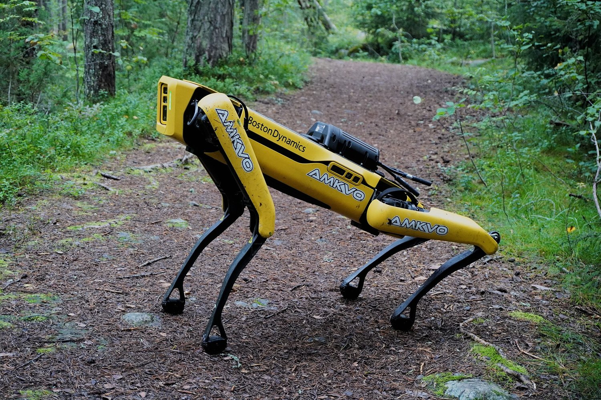
四本の足で立つロボットは、静止するとき、足の接地点を結んだ内側に重心を置いている。
Jonte／CC BY-SA 4.0／Wikimedia Commons（四足歩行ロボット Spot）
MITATE 6｜見立て
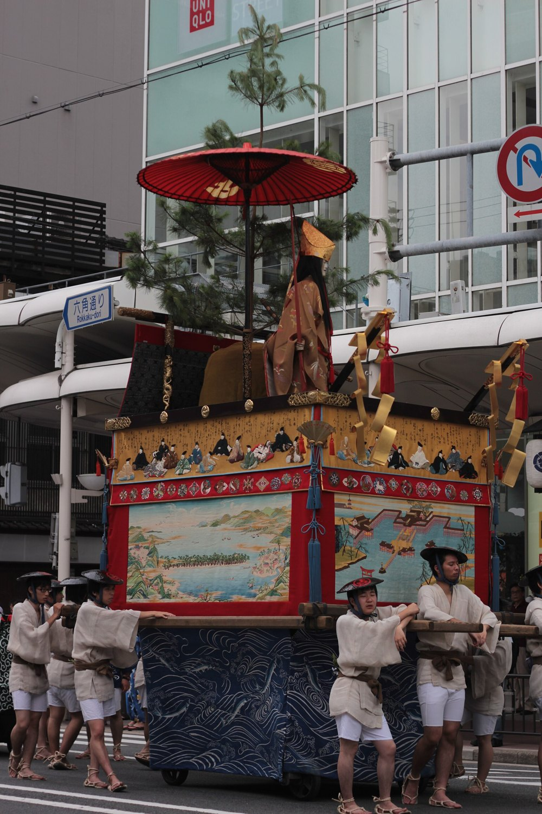
高い飾りを載せた山鉾は、小さな車輪の接地点の内側に、重心を保ったまま町を進む。
Japanexperterna.se／CC BY-SA 3.0／Wikimedia Commons（祇園祭の山鉾、2013年）
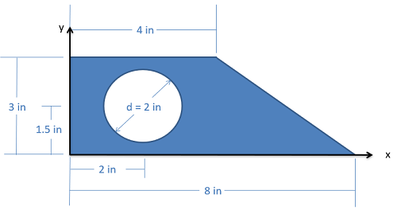
下辺 8 in、上辺 4 in、高さ 3 in の台形の均質な板に、直径 2 in の円孔が開いている（円孔の中心は、左下の原点から右へ 2 in、上へ 1.5 in）。板の図心の座標を求めよ。
出典：Moore ほか, Mechanics Map, A2.4 Centroids of Composite Parts, 例題1（https://mechanicsmap.org/、CC 表示・継承。版は不明）。公式解答 $\bar x=3.34$、$\bar y=1.29$ in と照合済み（公式は円の面積を 3.14 に丸めた値で、正確には $3.346$、$1.298$ in）。
解答
① 系：台形の板。長方形＋直角三角形−円に分ける（2.4）。
② 座標：左下を原点、$x$ を右、$y$ を上。
③ 部分：
・長方形（幅 4、高さ 3）：$S_1=12$、中心 $(2,\ 1.5)$。
・直角三角形（底辺 4：$x=4$〜8、高さ 3）：$S_2=\tfrac12\cdot4\cdot3=6$。重心は、直角の頂点（$x=4$、高さ 3 の辺）から底辺方向へ $\tfrac13\cdot4$、底辺から上へ $\tfrac13\cdot3$（3.2 節の補足）：$(4+\tfrac43,\ 1)=(5.333,\ 1)$。
・円孔（負の面積）：$S_3=\pi\cdot1^2=3.1416$、中心 $(2,\ 1.5)$。
全体の面積：$S=12+6-\pi=14.858$ in²。
④⑤ $\bar x=\dfrac{12\times2+6\times5.333-3.1416\times2}{14.858}=\dfrac{24+32-6.283}{14.858}=\mathbf{3.346}$ in、
$\bar y=\dfrac{12\times1.5+6\times1-3.1416\times1.5}{14.858}=\dfrac{18+6-4.712}{14.858}=\mathbf{1.298}$ in。
⑥ 確かめ：孔のない台形の図心は $\bar x=\dfrac{24+32}{18}=3.11$、$\bar y=\dfrac{18+6}{18}=1.33$。円孔は、この図心より左（$x=2$）・上（$y=1.5$）にあるので、取り除くと図心は右・下にずれる。$(3.35,\ 1.30)$ は確かにそうなっている ✓。
答 $(\bar x,\ \bar y)=(3.35\ \text{in},\ 1.30\ \text{in})$。
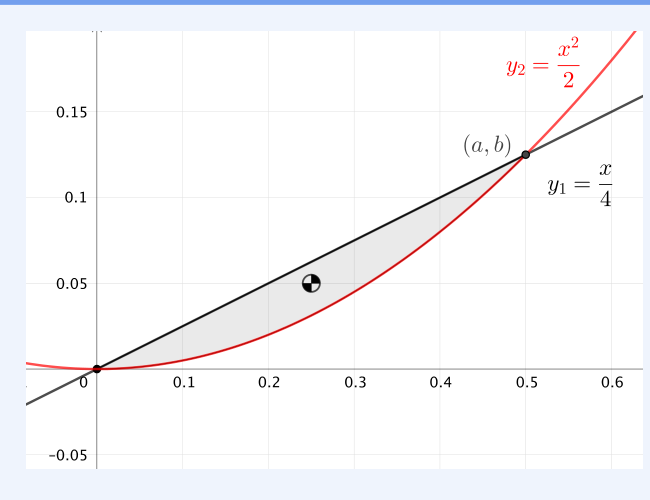
直線 $y_1=\dfrac x4$ と放物線 $y_2=\dfrac{x^2}2$ で囲まれた領域（均質な薄板）の図心を、積分で求めよ。（数値は無次元の長さ。）
出典：Baker & Haynes, Engineering Statics: Open and Interactive, §7.7, Example 7.7.12（https://engineeringstatics.org/、CC BY-NC-SA 4.0）。公式解答（$A=1/96$、$Q_y=1/384$、$Q_x=1/1920$、$\bar x=1/4$、$\bar y=1/20$）と照合済み。
解答
① 系：領域。2曲線の交点は $\dfrac x4=\dfrac{x^2}{2}$ より $x=0$ と $x=\dfrac12$。この間では $y_1\ge y_2$（直線が上）。
② 座標：原点は交点の1つ。$x$ を右、$y$ を上。
③ 小片：位置 $x$、幅 $dx$ の縦長の短冊。高さは $y_1-y_2$、面積は $dA=(y_1-y_2)\,dx$。短冊の重心は中央で、高さ方向の位置は $\dfrac{y_1+y_2}{2}$。
④ 面積と一次モーメント：
$$A=\int_0^{1/2}\!\Bigl(\frac x4-\frac{x^2}2\Bigr)dx=\Bigl[\frac{x^2}8-\frac{x^3}6\Bigr]_0^{1/2}=\frac1{32}-\frac1{48}=\frac1{96}$$
$$Q_y=\int x\,dA=\int_0^{1/2}x\Bigl(\frac x4-\frac{x^2}2\Bigr)dx=\Bigl[\frac{x^3}{12}-\frac{x^4}8\Bigr]_0^{1/2}=\frac1{96}-\frac1{128}=\frac1{384}$$
$$Q_x=\int\frac{y_1+y_2}2\,dA=\int_0^{1/2}\frac{y_1^2-y_2^2}{2}\,dx=\int_0^{1/2}\Bigl(\frac{x^2}{32}-\frac{x^4}8\Bigr)dx=\Bigl[\frac{x^3}{96}-\frac{x^5}{40}\Bigr]_0^{1/2}=\frac1{768}-\frac1{1280}=\frac1{1920}$$
← $Q_x$ の被積分関数：短冊の面積 $(y_1-y_2)dx$ に重心の高さ $\frac{y_1+y_2}2$ を掛けると、$\frac{(y_1-y_2)(y_1+y_2)}2=\frac{y_1^2-y_2^2}2$。
⑤ $\bar x=\dfrac{Q_y}{A}=\dfrac{96}{384}=\mathbf{\dfrac14}$、$\bar y=\dfrac{Q_x}{A}=\dfrac{96}{1920}=\mathbf{\dfrac1{20}}$。
⑥ 確かめ：領域は $0\le x\le\dfrac12$ なので、$\bar x=\dfrac14$ はちょうど中央 ✓（偶然ではない：短冊の高さ $y_1-y_2=-\tfrac12\bigl(x-\tfrac14\bigr)^2+\tfrac1{32}$ が $x=\tfrac14$ について左右対称）。$\bar y=0.05$ は、$x=\tfrac14$ での直線の高さ $y_1=0.0625$ と放物線の高さ $y_2=0.03125$ の間（平均 0.047）にあり、わずかに上側 ✓。
答 $(\bar x,\ \bar y)=\bigl(\tfrac14,\ \tfrac1{20}\bigr)$。
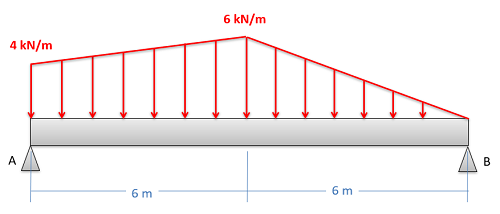
長さ 12 m の梁の左端 A はピン、右端 B はローラーで支えられている。下向きの分布荷重が、A で 4 kN/m、A から 6 m の位置で 6 kN/m まで直線的に増え、そこから B で 0 まで直線的に減る。分布荷重と等価な集中荷重の大きさと位置、および反力 $A_y$、$B_y$ を求めよ。
出典：Moore ほか, Mechanics Map, 4.5 Equivalent Point Load by Integration, 例題5（https://mechanicsmap.org/）。公式解答（$F=48$ kN、A から 5 m、$A_y=28$ kN、$B_y=20$ kN）と照合済み。
解答
① 系：梁。分布を長方形1つと三角形2つに分ける（5.2 節）。
② 座標：A を原点、$x$ を右。反時計回りを正。
③ 合力と作用点：
・長方形（A〜6 m、4 kN/m）：$R_1=4\times6=24$ kN、作用点 $x=3$ m。
・三角形1（A〜6 m、0 から 2 kN/m に増える部分）：$R_2=\tfrac12\times2\times6=6$ kN、0 の端（A）から $\tfrac23\times6=4$ m。
・三角形2（6 m〜12 m、6 kN/m から 0 に減る）：$R_3=\tfrac12\times6\times6=18$ kN、ピークの端（$x=6$）から $\tfrac13\times6=2$ m、すなわち $x=8$ m。
合力：$R=24+6+18=\mathbf{48}$ kN。作用点：$d=\dfrac{24\times3+6\times4+18\times8}{48}=\dfrac{72+24+144}{48}=\mathbf5$ m（A から）。
④ A まわり：$B_y\times12-48\times5=0$。力：$A_y+B_y-48=0$。
⑤ $B_y=\dfrac{240}{12}=\mathbf{20}$ kN、$A_y=48-20=\mathbf{28}$ kN。
⑥ 確かめ：B まわり：$A_y\times12-48\times(12-5)=336-336=0$ ✓。荷重の重心（5 m）は梁の中央（6 m）より A 側にあるので、$A_y>B_y$ ✓。
答 等価な集中荷重 48 kN（A から 5 m）。$A_y=28$ kN、$B_y=20$ kN。
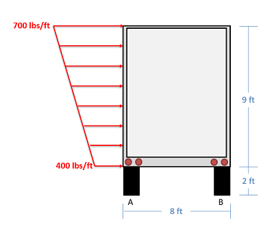
空のトレーラ（重さ 17 000 lb、重心は荷台の中央）に、左から横風が当たる。風の力は、荷台の底で 400 lb/ft、上端（底から 9 ft 上）で 700 lb/ft に直線的に増える分布荷重で表される。荷台の底は地面から 2 ft の高さにあり、左右のタイヤ（A、B）の間隔は 8 ft。左右のタイヤが地面から受ける垂直抗力 $F_A$、$F_B$ を求めよ。（水平方向の力は地面の摩擦が受けるとする。）
出典：Moore ほか, Mechanics Map, 4.5 Equivalent Point Load by Integration, 例題3（https://mechanicsmap.org/）。公式解答の $F_B=11\,537.5$ lb は誤り（下の注意を参照）。正しくは $F_B=12\,775$ lb、$F_A=4225$ lb。
解答
① 系：トレーラ全体。外力：風の分布荷重（水平、右向き）、重さ $W=17\,000$ lb（重心：左右の中央、地上から $2+4.5=6.5$ ft）、地面から受ける垂直抗力 $F_A$、$F_B$（上向き）と摩擦力 $H$（水平、左向き）。
② 座標：左のタイヤ A の接地点を原点、$x$ を右、$y$ を上。反時計回りを正。
③ 風の合力：長方形（400 lb/ft × 9 ft）$=3600$ lb（荷台の底から 4.5 ft）＋三角形（300 lb/ft が増える部分）$=\tfrac12\times300\times9=1350$ lb（底から $\tfrac23\times9=6$ ft）。合力 $R=3600+1350=4950$ lb、作用点（荷台の底から）$\dfrac{3600\times4.5+1350\times6}{4950}=\dfrac{24300}{4950}=4.909$ ft。地上からは $2+4.909=6.909$ ft。
④ A まわりのモーメント（$F_A$、$H$ は A の接地点にあるので腕 0）：風 $R$ は右向きで A の上方 $6.909$ ft にあるので時計回り（−）、重さは A の右 4 ft で下向きなので時計回り（−）、$F_B$ は A の右 8 ft で上向きなので反時計回り（＋）：
$$8F_B-4950\times6.909-17000\times4=0,\qquad F_A+F_B-17000=0$$
⑤ $F_B=\dfrac{34200+68000}{8}=\mathbf{12\,775}$ lb、$F_A=17000-12775=\mathbf{4225}$ lb。
⑥ 確かめ：B まわり：$F_A\times8-17000\times4+4950\times6.909=33800-68000+34200=0$ ✓（風が右に押すと、風上（左）のタイヤの荷重が減り、風下（右）が増える ✓）。風がないとき（$R=0$）は $F_A=F_B=8500$ lb。
答 $F_A=4225$ lb、$F_B=12\,775$ lb。
発展（自作）：風の強さを $k$ 倍にすると、$F_A=17000-\dfrac{k\times4950\times6.909+68000}{8}$ が 0 になるのは $k=\dfrac{68000}{4950\times6.909}=1.99$。風が約 2 倍になると、風上のタイヤが浮いて横転しはじめる（4.2 節の転倒条件：重力と風の合力の合成が、タイヤの間隔の外に出る）。
一直線（$x$ 軸）上に、質量 3 kg、5 kg、2 kg の質点が、それぞれ $x=0$、$2$、$5$ m の位置にある。重心の位置と、全体を支えるのに必要な力を求めよ。（$g=9.81\ \mathrm{m/s^2}$）
式 (1.5) より $x_G=\dfrac{3\times0+5\times2+2\times5}{3+5+2}=\dfrac{20}{10}=\mathbf{2.0}$ m。全質量 10 kg なので、支える力は $W=10\times9.81=\mathbf{98.1}$ N（上向き、$x=2.0$ m の点で）。確かめ：重心まわりのずれ $3(0-2)+5(2-2)+2(5-2)=-6+0+6=0$ ✓。
幅 0.30 m、高さ 1.20 m の一様な直方体を、底面の端を支点にゆっくり傾ける。何度を超えると、手を離しても元に戻らず倒れるか。幅 0.60 m、高さ 0.60 m の立方体ではどうか。
式 (4.2) $\tan\theta_c=\dfrac bh$。直方体：$\tan\theta_c=\dfrac{0.30}{1.20}=0.25$ より $\theta_c=\mathbf{14.0°}$。立方体：$\tan\theta_c=1$ より $\theta_c=\mathbf{45°}$。背が高く幅が狭いほど倒れやすい。確かめ：$\theta_c$ のとき重心が支点の真上、つまり $\tfrac b2\cos\theta=\tfrac h2\sin\theta$ ✓。
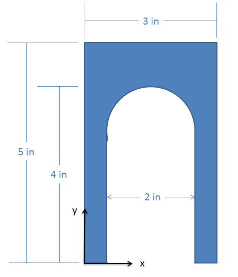
図のアーチ形の均質な板（外形は幅 3 in、高さ 5 in の長方形。中央に、幅 2 in の溝が下端から高さ 3 in まであり、その上に半径 1 in の半円の穴が続く）の図心を求めよ。左下の角が原点。
出典：Moore ほか, Mechanics Map, A2.4, 例題3（CC 表示・継承）。公式解答 $\bar x=1.5$、$\bar y=3.11$ in と照合済み。
全体の長方形（$S=15$、重心 $(1.5,\ 2.5)$）から、溝の長方形（$2\times3=6$、重心 $(1.5,\ 1.5)$）と半円（$S=\tfrac\pi2=1.571$、重心は直径の中点（高さ 3）から $\dfrac{4r}{3\pi}=0.4244$ だけ上：$(1.5,\ 3.424)$）を引く。
$\bar x=1.5$（左右対称）。$\bar y=\dfrac{15\times2.5-6\times1.5-1.571\times3.424}{15-6-1.571}=\dfrac{37.5-9-5.379}{7.429}=\mathbf{3.11}$ in。
確かめ：材料は上部に多く残るので、全体の中央（2.5）より上 ✓。
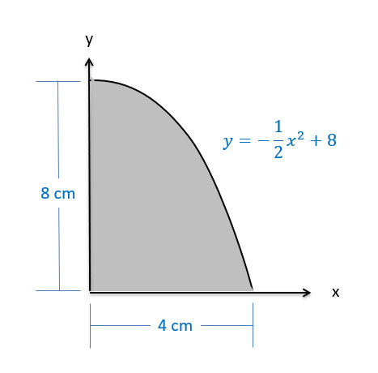
$y$ 軸、$x$ 軸と、放物線 $y=-\dfrac{x^2}{2}+8$（$0\le x\le4$ cm）で囲まれた図形（均質な板）の図心を、積分で求めよ。
出典：Moore ほか, Mechanics Map, 宿題 A2.1（答えのみ：$\bar x=1.5$、$\bar y=3.2$ cm）。解答は本教材の自作。
縦長の短冊（位置 $x$、幅 $dx$、高さ $y$）を小片にとる：$dA=y\,dx$、短冊の重心の高さは $y/2$。
$A=\displaystyle\int_0^4\Bigl(8-\frac{x^2}2\Bigr)dx=\Bigl[8x-\frac{x^3}6\Bigr]_0^4=32-\frac{32}{3}=\frac{64}3$ cm²。
$Q_y=\displaystyle\int_0^4x\,y\,dx=\Bigl[4x^2-\frac{x^4}8\Bigr]_0^4=64-32=32$。$\bar x=\dfrac{32}{64/3}=\mathbf{1.5}$ cm。
$Q_x=\displaystyle\int_0^4\frac{y^2}2dx=\frac12\int_0^4\Bigl(\frac{x^4}4-8x^2+64\Bigr)dx=\frac12\Bigl[\frac{x^5}{20}-\frac{8x^3}3+64x\Bigr]_0^4=\frac12\times136.53=68.27$。$\bar y=\dfrac{68.27}{21.33}=\mathbf{3.2}$ cm。
確かめ：図形は左（$x$ が小さい側）が高いので、$\bar x=1.5<2$（中央）✓。高さの最大 8 の 0.4 倍あたり。公式の答えと一致。
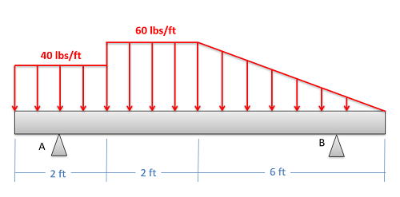
長さ 10 ft の梁に、左から $0\sim2$ ft で 40 lb/ft、$2\sim4$ ft で 60 lb/ft、$4\sim10$ ft で 60 lb/ft から 0 まで直線的に減る分布荷重が働く。支点 A は左端から 1 ft、B は左端から 9 ft の位置（A はピン、B はローラー）。荷重と等価な集中荷重（大きさと位置）と、A・B の反力を求めよ。
出典：Moore ほか, Mechanics Map, 4.6 Equivalent Point Load by Composite Parts, 例題2（CC 表示・継承）。公式解答（$F=380$ lb、左端から 4 ft、$F_A=237.5$ lb、$F_B=142.5$ lb）と照合済み。
3つに分ける：長方形 $R_1=40\times2=80$ lb（$x=1$）、長方形 $R_2=60\times2=120$ lb（$x=3$）、三角形 $R_3=\tfrac12\times60\times6=180$ lb（ピーク側の端 $x=4$ から $\tfrac13\times6=2$ ft：$x=6$）。
合力 $R=380$ lb、作用点 $d=\dfrac{80\times1+120\times3+180\times6}{380}=\dfrac{1520}{380}=4$ ft。
A（$x=1$）まわり：$8F_B-380\times(4-1)=0$ より $F_B=\dfrac{1140}{8}=\mathbf{142.5}$ lb、$F_A=380-142.5=\mathbf{237.5}$ lb。確かめ：B まわり：$8F_A-380\times(9-4)=1900-1900=0$ ✓。
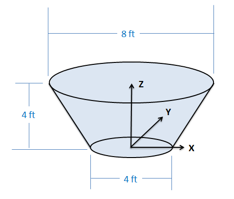
逆円錐台の水槽（底面の直径 4 ft、上面の直径 8 ft、高さ 4 ft）に水が満たされている。壁の質量は無視する。底面の中心を原点に、水の重心の高さ $\bar z$ を、積分で求めよ。
出典：Moore ほか, Mechanics Map, 宿題 A2.3（答えのみ：$\bar z=2.43$ ft）。解答は本教材の自作。
高さ $z$ での水平な薄い円板（厚さ $dz$）を小片にとる。半径は底の 2 ft から直線的に増えて $r(z)=2+\dfrac z2$（$z=4$ で 4 ft）。体積 $dV=\pi r^2dz$（水は均質なので重さは体積に比例、2.3）。
$V=\pi\displaystyle\int_0^4\Bigl(2+\frac z2\Bigr)^2dz=\pi\int_0^4\Bigl(4+2z+\frac{z^2}4\Bigr)dz=\pi\Bigl[4z+z^2+\frac{z^3}{12}\Bigr]_0^4=\pi\times37.33$。
$\int z\,dV=\pi\displaystyle\int_0^4\Bigl(4z+2z^2+\frac{z^3}4\Bigr)dz=\pi\Bigl[2z^2+\frac{2z^3}3+\frac{z^4}{16}\Bigr]_0^4=\pi\times90.67$。
$\bar z=\dfrac{90.67}{37.33}=\mathbf{2.43}$ ft。対称性から $\bar x=\bar y=0$。
確かめ：上が広いので、重心は中央（2 ft）より高い ✓。円柱（$\bar z=2$）と円錐（$\bar z=3$ ft：頂点が下）の間 ✓。
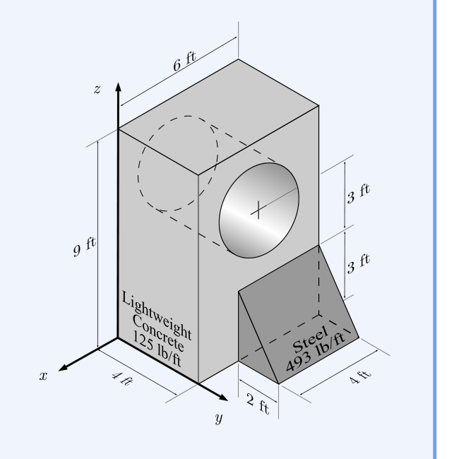
軽量コンクリート（125 lb/ft³）のブロック（$x$ 方向 6 ft、$y$ 方向 4 ft、高さ 9 ft）に、半径 2 ft の円孔が前後に貫通している（円孔の中心：高さ 6 ft、$x$ 方向はブロックの中央）。ブロックの前面には、断面が底 2 ft・高さ 3 ft の直角三角形で、$x$ 方向に 4 ft 押し出された鋼（493 lb/ft³）のくさびが付いている。全体の重量と重心を求めよ。座標は、ブロックが $x\in[-6,0]$、$y\in[0,4]$、$z\in[0,9]$ ft となるようにとる。
出典：Baker & Haynes, Engineering Statics: Open and Interactive, Example 7.5.3（CC BY-NC-SA 4.0）。公式解答（$W=26\,633$ lb、$(-3.22,\ 2.59,\ 3.37)$ ft）と照合済み。図の寸法の読み取り（くさびは $x\in[-6,-2]$、$y\in[4,6]$）は、公式の答えが再現できる範囲で採用した。
重さで重みをつけた分割法（式 2.7）。ブロック：$125\times(6\times4\times9)=27\,000$ lb、重心 $(-3,\ 2,\ 4.5)$。円孔（負）：$125\times\pi\cdot2^2\cdot4=6\,283$ lb、重心 $(-3,\ 2,\ 6)$。くさび：$493\times\bigl(\tfrac12\cdot2\cdot3\cdot4\bigr)=5\,916$ lb、重心は断面の重心（直角の頂点から底辺方向に $\tfrac13\cdot2$、上方へ $\tfrac13\cdot3$）で $y=4+\tfrac23=4.667$、$z=1$、$x=-4$（押し出し方向の中央）。
$W=27000-6283+5916=\mathbf{26\,633}$ lb。
$\bar x=\dfrac{27000(-3)-6283(-3)+5916(-4)}{26633}=-3.22$、$\bar y=\dfrac{27000\cdot2-6283\cdot2+5916\cdot4.667}{26633}=2.59$、$\bar z=\dfrac{27000\cdot4.5-6283\cdot6+5916\cdot1}{26633}=3.37$ ft。
確かめ：ブロックの中心（$-3,\ 2,\ 4.5$）に対し、円孔で上部が軽くなり、くさびで下の前（$y$ が大きい側）が重くなるので、重心は下方（$z$ 小）・前寄り（$y$ 大）にずれる ✓。
(a) 半径 $r=0.20$ m の均質な半円板の、直径から測った重心の位置を、式 (3.3) から求めよ。(b) 中心角 $120°$（$\alpha=60°$）、半径 0.50 m の扇形の重心は、中心からいくらか。(c) 半径 $r$ の均質な円板から、半径 $r/2$ の円形の穴を、穴が円板の縁に内接するようにくり抜いた（穴の中心は円板の中心から $r/2$）。残った板の重心は、円板の中心からどちらへ、いくらずれるか。
(a) $\alpha=\dfrac\pi2$ とおいて $x_G=\dfrac{2r\sin(\pi/2)}{3\cdot\pi/2}=\dfrac{4r}{3\pi}=\dfrac{4\times0.20}{3\pi}=\mathbf{0.0849}$ m（半円の中心から、半円の弧の側へ）。
(b) 式 (3.3)：$x_G=\dfrac{2\times0.50\times\sin60°}{3\times\pi/3}=\dfrac{0.8660}{\pi}=\mathbf{0.2757}$ m（中心から）。
(c) 円板の中心を原点、穴の中心を $x=r/2$ とする。円板（面積 $\pi r^2$、重心 0）から穴（面積 $\tfrac{\pi r^2}4$、重心 $x=\tfrac r2$）を引く（2.4）：$x_G=\dfrac{\pi r^2\cdot0-\tfrac{\pi r^2}4\cdot\tfrac r2}{\pi r^2-\tfrac{\pi r^2}4}=\dfrac{-\tfrac18}{\tfrac34}\,r=\mathbf{-\dfrac r6}$。穴と反対側へ $r/6$ ずれる。確かめ：穴の反対側に材料が多く残るので、穴と反対へ寄る ✓。
| 講義資料 | 本教材 |
|---|---|
| p.1–3 3・2 重心の扉、今日のポイント | 序 |
| p.4–5 3・2・1 質点系の重心：はじめに（式 3.43〜3.45）、重心の定義 | 1.1、1.2 |
| p.6–11 質点系の重心（考え方1・考え方2） | 1.3 |
| p.12 ベクトル表記・質量中心 | 1.4（導出は本教材の追加） |
| p.13–15 物体の向きが変化した場合 | 1.6 |
| p.16–17 連続体の重心 | 2.2 |
| p.18–19 物体の分割と重心 | 2.4 |
| p.20–21 質点系→連続体の関係、一次モーメント | 2.2 |
| p.22 重心の計算（均質・薄板・線、図心） | 2.3 |
| p.23 計算例1（長方形） | 3.1 |
| p.24–25 つりあいの安定度、物体の転倒 | 4.1、4.2 |
| p.26 ロボットの歩行 | 4.3 |
| p.27–30 補足資料：分布荷重 | 5.1 |
| p.31–33 例題：はりの支点反力 | 5.3 |
| p.34–35 計算例2（三角形） | 3.2 |
| p.36–37 練習問題【3・2】（L字板） | 3.4 |
| p.38–42 計算例3（扇形）と別解 | 3.3 |
| p.2 小型移動マニピュレータの図（重心の位置） | 序、6章 |


,_Japan,_Meiji_period,_Honolulu_Museum_of_Art.JPG){kind=link}


,_from_the_series_One_Hundred_Famous_Views_of_Edo_(Meisho_Edo_hyakkei)_MET_DP123602.jpg){kind=link}